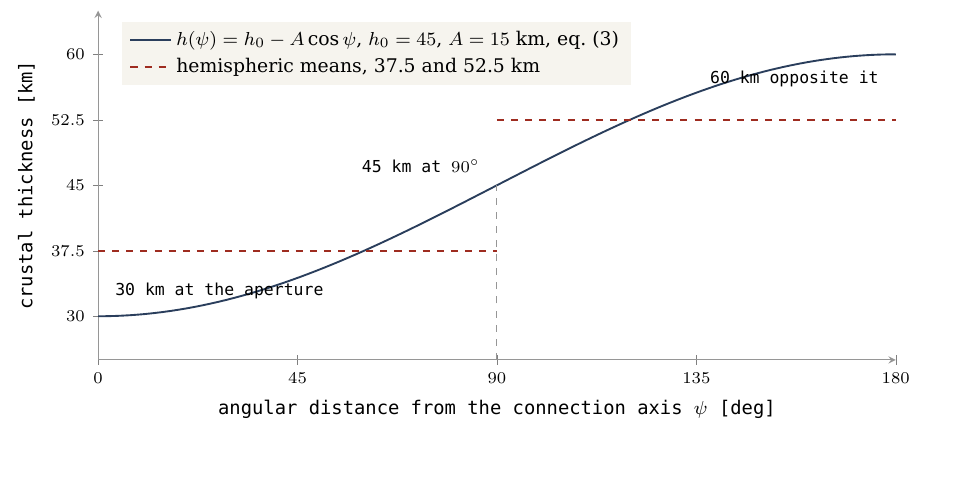
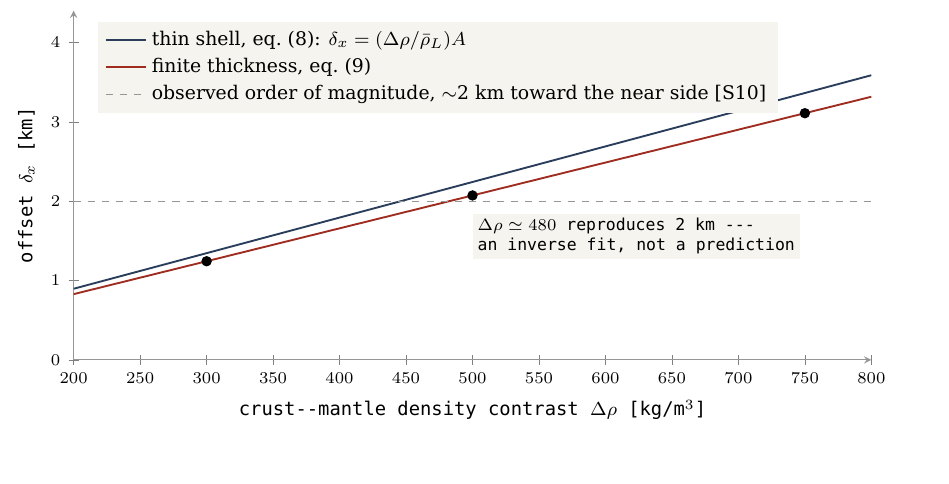
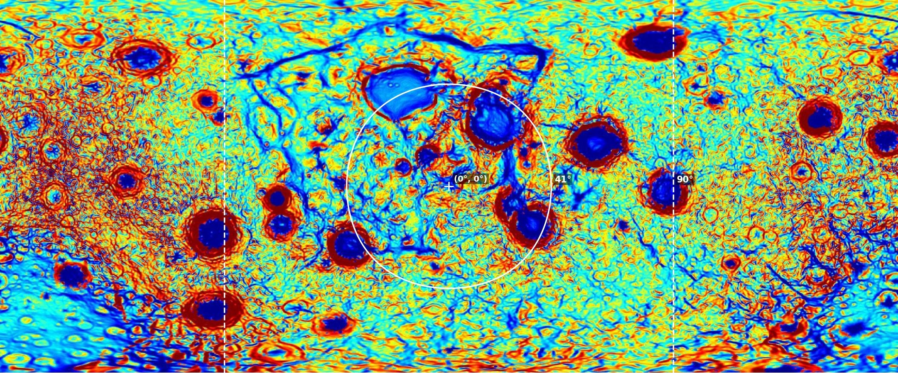
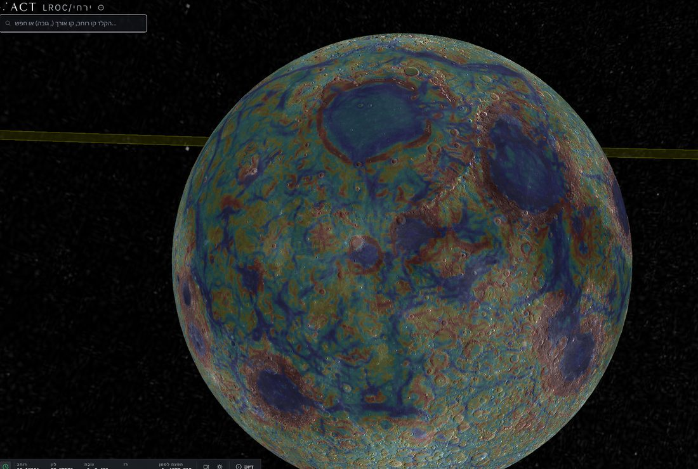
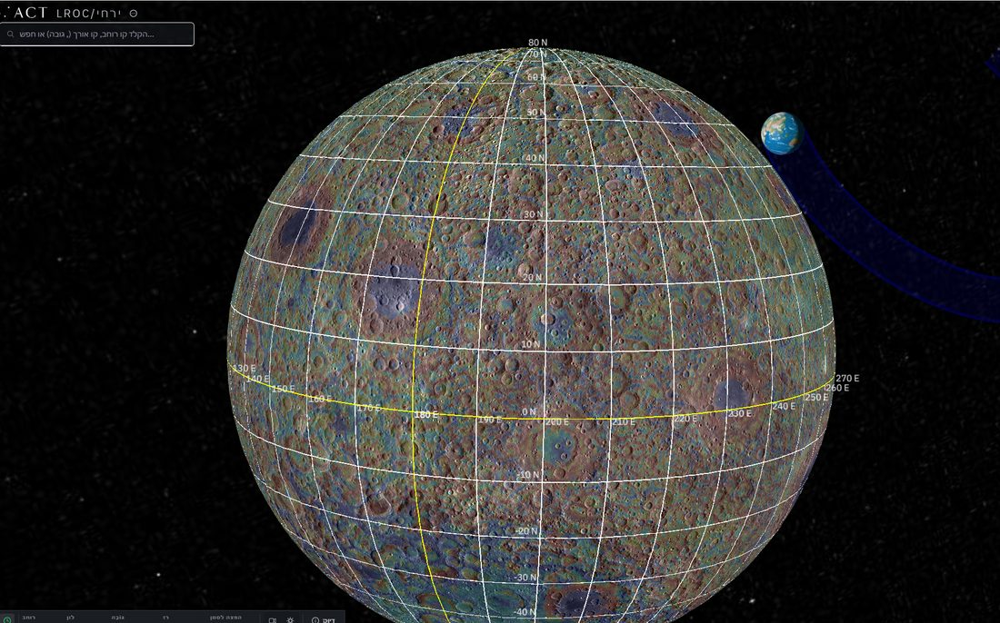
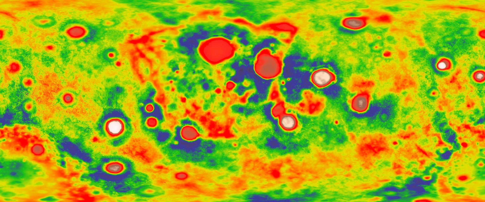

13. The Requirements
What the mechanism forces, what the Moon has, and what remains unresolved
Introduction and the separation of environments
This chapter defines the dynamical boundary conditions, the physical parameters and the mass balances that make up the formation environment of the Moon and the LEF (Lunar Elevation & Fission) model.
Principles for deriving the mechanical requirements
• The physical basis of the derivation: all mechanical requirements of the model are derived deductively from the state of the system at the moment of formation and detachment. The numerical and dynamical baselines form the common framework for all geodynamic mechanisms in the series; saying that "the mechanism requires" a given condition means that the condition follows from the conservation laws and the equations governing the system.
• A strict separation between the states of the system: the model sets a complete methodological barrier between the ancient formation environment (the initial conditions at the moment of birth) and the measurements of the modern Moon taken today. An observation of a late state may not be used as an initial condition without a physical-evolutionary model linking the two states.
| System state | Physical and observational characteristics | Methodological status in the model |
|---|---|---|
| The formation environment (moment of birth) | A dynamic, soft system with low viscosity and a high axial spin rate; material in active differentiation on the tip of the pear. | Binding initial conditions: the basis for computing the disruption thresholds, the position of the corotation line, and the mass and momentum balances. |
| The modern Moon (present era) | A rigid, frozen body that has gone through billions of years of thermal cooling, residual volcanic activity, and craters added by returning material that landed on the surface. | An evolutionary product: requires a complete separation between frozen ancient signatures (such as the crustal asymmetry and the crater record) and later geological additions. |
Table of parameters, values and methodological status of the scenario environment (LEF model)
The table below gathers the numerical, structural and dynamical boundary conditions of the system at the moment of formation and detachment (Papers 2–4), distinguishing methodologically between fixed inputs, dynamic variables and fitting constraints.
| Physical domain | Scenario environment and fixed numerical parameters | Methodological status and role in the model |
|---|---|---|
| Time and chronology | The scenario begins about ago; a time window of up to about is kept for testing. On the series' timeline exactly pass from the start of the bulge's growth to the release of the Moon ago: about for the growth of the bulge and the pear, about for the flattening stage, and about more until the physical release. | A scenario assumption. Geological age differences between the crust and the basalt are not a measurement of the duration of the mechanical construction; the basalt age dates a late volcanic eruption, not the formation of the primary sialic crust beneath it. |
| Initial mass of the parent body | The parent body is defined as the Earth before the Moon separated, so its mass equals exactly the mass of the modern Earth () plus the mass of the modern Moon (). | A fixed input. Before the dynamic transfer of material begins, the mass of the future Moon is contained fully and indistinguishably within the mass of the parent body. |
| Reference masses after transfer | Inputs of the series. Along the path of mass transfer, the mass of the mechanical connection and the components of material lost to space must be tracked quantitatively; at intermediate stages part of the physical mass is no longer in the Earth but is not yet gathered in the Moon. | |
| Radius of the parent body | • Volumetric radius (sphere of equal volume): . • Equatorial radius in the example of the initial structure: (larger than the volumetric radius because of the centrifugal bulging of the equator in fast rotation). | Different physical values. These quantities cannot be interchanged or substituted for each other within the same dynamical equation. |
| Spin rate (day) | at the start in the reference example; exactly at the moment of physical release. The lengthening of the pear body mechanically slows the spin (larger moment of inertia), while the sinking of the core speeds it up [Paper 2]. | A variable value within the admissible range of Paper 2. The spin rate changes with the moment of inertia under conservation of angular momentum (): moving mass outward (lengthening of the pear) slows the spin, and drawing mass inward (iron sinking to the core) speeds it up. |
| Distance of the corotation line | • At a spin of : . • At the moment of release (): (massless test particle), (two-body calculation including the mass of the Moon), and along the release latitude of [Papers 2 and 4]. | States and dynamical definitions from Paper 2. The Moon is released when its centre of mass crosses the corotation line (, about ). Corotation is not a sufficient condition for release: the mechanical connection must fail, and the released body must survive structurally against the Earth's tidal forces. |
| Gravity field | The dynamical field depends locally on geographic position, on the mass of material transferred, and on the internal density structure. | Initial equatorial estimate: about on the parent body. This value does not represent the internal gravity on the Moon; it is lower than the modern Earth's surface gravity because of the enlarged equatorial radius and the centrifugal offset. |
| Dimensions of the early lunar body | • A radius of about at a mean density of . • A radius of about at a mean density of (for the full target mass). | Illustrative geometric states from Paper 3. The values give the theoretical radius of the body at each density; the hotter, lighter and richer in volatiles the body is, the larger its volume. The modern Moon is denser and smaller than both, and these values should not be read as a continuous history of contraction. |
| Internal structural organization | A continuous process of differentiation of metal and silicate phases: heavy iron sinks gravitationally to the centre and light silicate floats upward, both in the Earth and in the developing lunar body. | A fitting constraint. Must be reconciled with the moment-of-inertia values and the radioactive chronometry. The existence of a small modern lunar core is not a direct measure of the structural state of the Earth's core at that ancient time. |
| Source of mass and material | Simultaneous feeding from two terrestrial sources: the deep mantle reservoir and, in parallel, the outer sialic shell layer () of the parent body, which rises together with the body and serves as the surface of the lunar dome. | One body and a unified mass balance [Paper 3]. The sial layer is the light outer layer of the Earth (rich in silicon and aluminium), lying above the denser sima layer (). |
| Mechanism of the outflows | Deep mantle material rising vertically through dedicated vents and conduits in the lithospheric shell. | A mechanical definition. The physical outflow is not defined or computed as material torn or removed from the upper shell itself. |
| Components and volatiles | A massive ancient inventory of volatiles in the volume of the Earth — first of all water () — which physically lowers the melting point and the mechanical stiffness of the material carrying them. | No verified concentration. There is no verified concentration value for the geological system as a whole; the phase state (dissolved, dense supercritical fluid or gas phase) is set only by the lithostatic pressure, the temperature and the chemical composition. |
| Atmosphere and thermal cooling | Conductive and convective heat transfer to space; an internal dynamic cycle of rising, cooling and re-sinking of volatiles. | An energy-balance constraint. Cooling of the body requires a net emission of heat (net radiation) to space; an internal cycle of material does not change the total energy balance of the system. |
| Rheology and viscosity | A cold, rigid lithospheric shell at the surface, but mobile and viscous at its base; the working interface with the interior is the layer of lowest mechanical stiffness. | A structure-preservation constraint [Paper 3]. The model requires an outer shell with a stiff viscosity of above a mobile interior, to prevent significant flow and to preserve crater geometry. |
| Parameters of the lithospheric shell | A physical thickness of about and a material density of , spread over the surface of a hemisphere whose geometric base is across (a total area of ). | A crustal mass balance. The crustal mass is about ( of the mass of the modern Moon). This crust closes over the far hemisphere (Far Side) as a thickened crust thick [Paper 3] as a result of the change in area (the envelope converging onto the smaller area of the hemisphere). |
| The connected geometry (the pear) | The lunar dome is the tip of the pear, with a surface width of about . The base of the pear and its internal conduits lie near Kiritimati Island () in the central Pacific, above the LLVP anomaly in the lower mantle. At the moment of release the contact area is a disc wide (a quarter of the original base area). | Properties of the connection interface. The contact disc becomes a cap on the near side (Near Side) of the Moon, with an angular size of about by the early calibration and exactly by the updated rule of Paper 3 (§B.8). The lunar body peels mechanically off the sial layer on which it sat and carries it along. |
| Stratigraphic time order | The magmatic outflow and the rise of the dome happen simultaneously; the outflow stream stops before the dome's envelope closes; the structural closing of the dome ends before the physical detachment. | A chronological constraint of Paper 3. The durations of the dynamic transition stages cannot be measured directly. |
| The modern lunar surface | Composed of the primary anorthositic crust, impact basins, the basaltic fill of the maria (Mare Basalts) and later tectonic changes. | A separation criterion. Requires a strict separation between geological features that originate in the formation mechanism and later residual structures. |
Summary of the geodynamic picture of the model
The data gathered in the parameter table set the physical stage on which all the mechanical requirements of the LEF model are tested:
1. The configuration of the ancient parent body: an early Earth spinning at a high axial rate (a day of ) and heavier by exactly the mass of one modern Moon ().
2. The asymmetric pear geometry: an asymmetric, pear-like geodynamic structure made entirely of the Earth's own material, whose western tip region solidifies and closes as the body of the Moon.
3. The carried lithospheric shell: a rigid lithospheric shell of high viscosity () carried vertically upward, serving as the outer surface of the lunar dome.
4. The conditions of physical detachment: release and free gravitational separation taking place precisely within the dynamical range of the corotation line ( in a two-body calculation).
Each mechanical requirement presented below is meant to test which physical and geochemical traces this dynamic stage left on the Moon and on the floor of the Earth.
Summary of the mechanism and the testing method
• The geodynamic construction mechanism: in the LEF model the Moon was built directly from the Earth's material while still attached to it through a physical interface. Deep mantle material was fed continuously into the developing lunar body, and at the same time the outer lithospheric shell of the parent that lay above the region rose vertically as the surface of the dome structure and solidified into the lunar crust.
• The structure of a requirement and its test: a requirement is defined as a geophysical or geometric property that the Moon or the Earth must show if they formed by this mechanism. Each requirement is stated in three fixed components:
1. The mechanical condition: the physical law or constraint the model must meet.
2. The quantitative measure: the empirical parameter that tests whether the condition holds.
3. The result that would not fit: a measurement result that would not fit the requirement.
The analysis rests on discrete requirements and not on a cumulative fit score, because several fits may represent one physical fact measured in several ways, and a clear misfit in one requirement stands on its own and calls for examining its specific mechanism regardless of the other fits.
The seven basic requirements of the model
1. Full isotopic kinship with terrestrial sources.
2. A limited transfer of metal phase, dictated by the existence of a small lunar core.
3. A stratigraphic asymmetry of crustal thickness.
4. A morphological orientation tied directly to the side of the mechanical connection.
5. A chronology of cooling and of the preservation of crustal structures.
6. Availability of volatiles during the mass transfer.
7. A mathematical correlation between the distribution of crustal mass and the centre-of-mass offset.
Limits on reading the modern data
Current geological data confirm that the morphological features exist, but on their own, without a physical link, they are not proof of the formation mechanism:
• The ages of the mare basalts (Mare Basalts): they date late volcanic activity and do not set the age of the primary anorthositic crust beneath them.
• The water concentration in the sampled magma: it represents a local residue and does not directly reflect the total volatile inventory at the time of construction.
• Synchronous rotation today: it is not proof of continuous synchronous rotation since the moment of detachment.
The model crustal balance and the centre-of-mass offset
• The mechanics of the offset: the Moon's centre of mass is offset from its geometric centre; a light crust that is thicker on one side shifts the centre of mass toward the opposite side. For density contrasts ( between crust and mantle) in the range , a computed sensitivity range of is obtained for the centre-of-mass offset (a mathematical sensitivity range, not an independent prediction of the empirical offset).
• The division of crustal mass between the hemispheres:
• The far side (Far Side): the dome shell, whose linear thickness grew threefold during the structural closing, fully supplies the crustal mass of the far side (, about of the total mass of the Moon) – a value that agrees within about with the gravity findings of the GRAIL mission.
• The near side (Near Side): a separate structural member, made of the sial of the terrestrial base that peeled off with the body, melted completely above the contact region and was thermally smoothed by the deep heat. This crust is thinnest directly beneath the mare basins, which are defined as structural vents.
What the paper proposes: theses and scientific predictions
| Field of testing | The mechanical requirement of the LEF model | The empirical finding and numerical values |
|---|---|---|
| 1. Isotopic match of the source material | The material of the Moon must be identical in isotopic composition to the material of the Earth. | Measurements of the oxygen isotopes ( and ) show a full match within a strict precision of . |
| 2. Limit on the volume of the core | The mass stream rising along the pear carried mainly light silicates and only a tiny amount of metal phase. | The Moon's seismic core has a measured radius of only , about of the Moon's total mass. |
| 3. Asymmetry of crustal thickness | The crust must be thicker opposite the old region of the mechanical connection, where the crown of the dome carried the shell and the far side froze first. | The gravity data of the GRAIL mission confirm that the far-side crust is significantly thicker than the near-side crust. |
| 4. Fixing of the surface (orientation) | The lunar body must keep its original connection side facing the Earth directly. | The Moon is in full synchronous lock, with the mare basins (the near side) always facing the Earth. |
| 5. Chronology of thermal closing | The far-side crust must close and harden structurally before the hot feeding stream of the near side faded. | The ancient anorthositic crust on the far side kept its topographic structure before the near-side basins cooled. |
| 6. Presence of volatiles | The process of mass feeding and the geodynamic flow needed volatiles to lower the viscosity. | Melt inclusions sampled in volcanic crystals show water concentrations of . |
| 7. The empirical centre-of-mass offset | The asymmetric distribution of crustal mass requires a shift of the centre of mass toward the near side. | The Moon's centre of mass is actually offset by toward the near side (within the theoretical sensitivity range of ). |
Organization of the data, the mechanisms and the full numerical parameters
| Topic | Finding | Source | Status in the model |
|---|---|---|---|
| Isotopic composition | A complete match of the oxygen isotopes within -1 ± 5 ppm. | Laboratory measurements of samples | Requirement 1 (fits) |
| Dimensions of the lunar core | Firm seismic radius: 330 km. Core mass: about 1.4% of the total mass of the body. | Seismic data of the Apollo networks | Requirement 2 (fits; evidence of a silicate stream) |
| Crustal asymmetry | The far side is significantly thicker than the near side; the far-side crustal mass is about 4% of the Moon's mass. | Global gravity map (GRAIL / NASA) | Requirement 3 (fits; a dome crown that froze) |
| Concentration of buried volatiles | Melt inclusions inside sealed crystals contain water concentrations of 615 - 1,410 ppm. | Chemical analysis of volcanic crystals | Requirement 6 (fits; evidence of volatiles at the source) |
| Centre-of-mass offset (measured) | A linear deviation of 2 km toward the near side relative to the geometric centre. | Satellite altimetry and gravity measurements | Requirement 7 (fits) |
| Centre-of-mass offset (model) | A computed theoretical value of 1.2 - 3.1 km (exact sensitivity range: 1.24 - 3.11 km) for density contrasts of 300 - 750 kg/m³. | The mass-balance equations of the dome | Mathematical consistency of the model |
| Concentric zonal pattern | The lunar surface is arranged in three concentric zones around the centre of the near side: the contact (exposed last), the base ring, and the far side (the old surface of the dome). | Map of the surface gravity gradient (GRAIL) | Requirement 8 (an eighth property, new in Paper 13) |
| Residual pear mechanisms | Seven geodynamic properties: the pear's self-gravity, the return mechanism, the Pacific LLVP, the KREEP component on the near side, the terrestrial core as a gauge, the absence of foreign material, and an increased polar crater density that depends on crater diameter. | Combined morphological and seismic analysis | Presented together in Section C.6 |
| Vent mechanisms and the moons of Mars | Three dynamical properties: the 34 mare basins defined as structural vents and the source of the returning material, two outlets of material beneath the South Pole–Aitken basin with a dome to their south, and the two moons of Mars (Phobos and Deimos) launched from a single outflow conduit on the equator of Mars. | Outflow models and dynamical orbits | Presented together in Section C.7 |
Structural integration of the requirements
• Uniting the observed phenomena under one mechanical source: the model does not treat the seven lunar properties as seven separate and independent statistical proofs. Crustal thickness, the centre-of-mass offset, the mare basins and part of the record of geological ages are defined physically as one structural phenomenon reflected in four different ways of observation.
• The structure of the quantitative fit test: every morphological fit comes with the dedicated computation protocol needed to turn it into a strict quantitative test. The protocols include multi-system isotopic balances, rates of metal mass transfer, and combined crust–offset fits.
• Parametric consistency: the computation equations, together with their exact physical misfit thresholds, are detailed in Section D.3. The central aim of the model is to show that one uniform and fixed mathematical set of parameters can produce all of these morphological and chemical results at the same time.
Introduction — from the mechanism to the traces
Methodological character and aim of the analysis
• Linking the physics to the data: after the way of construction and the geodynamic mechanism were defined in Papers 2–3, the central role of Paper 13 is to link the physics of the scenario to empirical data that can be tested independently. The process of the Moon's formation must leave defined physical and morphological signatures in the chemical and isotopic composition, in the internal structure, in the asymmetry of crustal thickness, in the orientation toward the Earth, and in the chronological order of cooling and thermal closing.
• Separating the case of Mars: Paper 10 is a separate and independent test applied to the Mars system. A mathematical success or a physical difficulty arising in Paper 10 does not change the fixed parameters set for the terrestrial case in the LEF model.
Defining the structural tool of the requirement
The theoretical tool guiding the paper is the requirement. Each requirement is defined strictly by three components: the geophysical property that must hold if the Moon formed by the LEF mechanism, the exact empirical measurement that tests it, and the numerical or structural result that would not fit the requirement.
The requirements are collected separately, without weighting into a cumulative mathematical score, for two strict methodological reasons:
1. Interdependence of structures (a single distribution of material): the morphological properties of the Moon are not independent of one another. A crust that thickened on the far side, a centre of mass offset toward the near side, the concentration of mare basins on the thin side and part of the record of geological ages are a direct result of one mechanical distribution of material. Adding them up as separate points in a cumulative score would count one physical fact twice.
2. The principle of separate testing: a weighted score lets many agreements and chance correlations outweigh a decisive disagreement in a single parameter. By contrast, a requirement defined with its own misfit condition is tested on its own merits: a clear misfit in one requirement is recorded against that requirement and is not hidden by other fits (reported separately in Section B.9).
Chronological classification of the model's results
The order of presentation in the paper puts the definition of the mechanical requirement first and the empirical observation after it, but this does not turn known data into predictions recorded before their discovery. The model distinguishes strictly between three kinds of result:
| Classification of the result | Methodological definition |
|---|---|
| Derived result | A value or trend derived directly from the physical equations under defined basic assumptions of the scenario. |
| Postdiction | A fit of the model's parameters to existing empirical observations made in the scientific literature. |
| Prediction | An independent structural or numerical claim of the model that has not yet been tested against empirical data. |
• Consistency-check constraint: a measurement made by outside researchers in the scientific literature that also served as an input for choosing a free parameter in the model is defined as an internal consistency check only (Consistency Check), and should not be seen as independent empirical support for the mechanism.
Structure of the paper's four parts
| Part of the paper | The structural question the part decides |
|---|---|
| PART A | What exactly does the geodynamic scenario require, and on which physical assumptions does each requirement rest? |
| PART B | What has actually been measured in the empirical data, and what can be concluded from each geophysical measurement? |
| PART C | Which further signs and mechanisms deserve testing, without counting them as existing, verified results of the model? |
| PART D | Which results would not fit the requirements, what remains open, and what is the innovative element of the work? |
PART AThe seven requirements and their assumptions
This part defines the mechanical and chemical requirements that the LEF model's way of construction demands of the Moon. In the model, the Moon was built while attached to the Earth: deep material was fed upward into a growing body, and the outer shell of the Earth above that region rose with it as the surface of a dome. Each of the seven sections (R1–R7) defines one physical trace, sets out the mechanical need for it, and defines the kind of measurement that tests it (the measurements themselves are examined in parallel and in the same order in Part B).
The problem and the method of derivation
• Limits of the spatial geometry: the geometry of an attached body does not by itself set the chemical composition, the rate of thermal cooling or the morphological details of the crust. A body attached to the Earth by a broad, hot connection has a near side and a far side, a fed region and a closed region; but parameters such as the mass of metal transferred, the freezing rate of each wall or the volume of water that moved with the feeding stream are not derived from the structural shape alone.
• The method of physical integration: each mechanical requirement comes with the complementary physical assumption needed to derive it quantitatively. This approach separates the components that follow directly from the geometry from those derived from the additional dynamical assumptions, so that an empirical test that did not pass points precisely to the specific component it does not fit.
• Range of the measurements (R1–R7): the seven requirements cover seven separate fields of measurement: isotopes (R1), core size (R2), crustal asymmetries (R3), the orientation of the Moon toward the Earth (R4), the order of cooling and preservation (R5), the volatile inventory (R6), and the mathematical relation between the crustal distribution and the centre-of-mass offset (R7).
A.1R1 — Kinship with terrestrial material
1. What the requirement demands
• Integration with terrestrial reservoirs: in the geodynamic scenario of the LEF model, the source of all the mass building the Moon is in the Earth. The model therefore requires a full chemical and isotopic match with the terrestrial reservoirs from which the material came, after quantitatively accounting for partial melting, phase separation, evaporation and geological differentiation.
• Definition of a reservoir (Reservoir): a defined volume of material with a distinct chemical and isotopic composition, such as the Earth's deep mantle (Mantle) or its outer sialic shell ().
• The terrestrial mixture constraint: since the model derives the composition of the Moon from these two defined terrestrial reservoirs (the deep feeding stream and the rising shell), the global composition of the modern Moon must be mathematically attainable as a direct mixture of these two sources.
2. Why the model needs this requirement
• The obligation of a chemical signature: this property is the most direct physical result of the connection mechanism; if the mass was moved from the Earth, it must carry the chemical fingerprint of the parent.
• Isotopes as a label of origin: isotope ratios (atoms of the same element that differ in the number of neutrons and in atomic mass) show clear differences between different bodies in the Solar System; the oxygen deviation does not change in internal processes within a body, and therefore serves as a label of origin.
3. What the requirement does not demand
A shared geological source does not dictate mathematical equality in every single element concentration or isotope ratio. The differences allowed and expected by the scenario include:
• Radiogenic isotopes: isotopes formed by natural radioactive decay. Two reservoirs that were physically separated and hold different concentrations of the parent element (Parent isotope) will accumulate, over geological time, different amounts of the daughter element (Daughter isotope), even if their isotopic composition was identical at the moment of separation.
• Mass-dependent fractionation (Mass-dependent fractionation): the mechanical sorting of light versus heavy isotopes during evaporation, melting or crystallization, in which the light isotopes move or escape from the system more easily.
4. How the requirement is tested
• The multi-system balance criterion: the test checks whether a quantitative weighting of the contributions of the two terrestrial sources can explain at the same time several different isotopic systems together with the bulk chemical composition (Bulk composition).
• The limit of a single measure: a measurement of the oxygen isotopes alone is not sufficient support for the overall balance. Although the oxygen isotope difference between the Earth and the Moon is (Section B.1), requirement R1 will be defined as verified only if one mathematical mixture of the two terrestrial reservoirs, under the allowed physical processes, explains at once the oxygen values, the other isotopic systems and the global chemistry.
A.2R2 — A small metal core
1. What the requirement demands
• A limited volume and mass: the Moon has a small metal core with a measured seismic radius of , about of the Moon's total mass (Section B.2) – an unusually small mass fraction for a planetary body of its size.
• The constraint of the feeding stream: in the model, the Moon was fed from below mainly with silicate material () containing only a low concentration of metal phase.
• Two-sided bounds of the requirement: the internal transfer mechanism must carry enough metal mass to build the existing core (lower bound), without transferring more metal than allowed, which would enlarge the core beyond the observed seismic value (upper bound).
2. The factors controlling the transfer of metal
The volume of metal phase transferred in the geodynamic medium is set by four fixed physical parameters at the source:
1. The fraction of free metal: the concentration of unbound metal phase in the feeding material.
2. The size of the metal droplets (Droplet Rheology): the diameter of the metal droplets in the stream. Large, heavy droplets sink gravitationally back through a slow rising flow, while tiny droplets are swept upward with the stream.
3. The speed of the vertical stream: the rising speed of the silicate flow compared with the hydrodynamic (Stokes) settling speed of the metal droplets.
4. The oxidation state (Oxidation State): sets the fraction of iron () chemically locked in the crystal lattice of silicate minerals (as ) compared with iron present as a free metal phase (). Iron bound in minerals moves with the silicate phase and cannot separate and join the metal core.
3. The mass-balance equations of the core
When the contribution of metal phase from the rising lithospheric shell is taken as negligible (since the sialic shell is poor in free metals), the mass balance of the core is defined as a product of three components:
where the parameters are defined as follows:
| Parameter | Physical definition |
|---|---|
| The mass fraction of the core out of the total mass of the modern Moon. | |
| The mass fraction of the deep (internal) mantle material supplied by feeding, out of the total mass of the body. | |
| The fraction of free metal in the internal feeding material. | |
| The hydrodynamic efficiency with which the metal settles and joins the core at the centre of the body. |
• Numerical derivation of the balance: inserting the empirical core value () and the deep mantle material parameter from Paper 3 (, within a model range of ) fixes the value of the product:
This result means that exactly of the deep mantle material fed upward must consist of metal phase that actually reached the centre of the body. If the settling efficiency is smaller than 1 (), the original feeding material must carry a correspondingly higher metal concentration. In this way the qualitative term "little metal" is translated into a measurable physical quantity that the mechanism must explain (as shown in Figure 4, which maps the product needed for a core of of the Moon's mass as a function of ).

Figure 4 detail · The inventory requirement R2 as a quantitative measure
| Element of the figure | Definition and quantitative value |
|---|---|
| Horizontal axis () | The internal mass fraction of the deep feeding material (). |
| Vertical axis () | The required value of the product for building the metal core. |
| Solid dark-blue line | The core value adopted in the model, equal to of the Moon's mass (). |
| Dashed red line | A lower core bound of (). |
| Dotted red line | An upper core bound of (). |
| Black reference point | The values of the fixed reference case of Paper 3: and a product value of . |
• The mathematical behaviour of the curves: all curves decline monotonically from left to right; the larger the fraction of the Moon's mass made of deep mantle material, the lower the metal concentration each unit of its mass must carry. Halving the parameter exactly doubles the required product on the vertical axis. Since the model places of the Moon's mass in the deep material, the reference point lies at the right-hand end of the figure, which represents the system's minimal requirement.
The verification protocol of requirement R2
• A quantitative test: the test is defined as a quantitative prediction derived from the mass-transfer and differentiation equations of Paper 3, which sets the range of core fractions the mechanism can physically produce. This prediction is placed directly beside the empirical core measures from lunar seismology (Section B.2).
• Definition of differentiation (Differentiation): the mechanical separation of a planetary body into distinct layers by density contrast — a heavy metal phase sinks gravitationally to the centre, and a light silicate phase floats and remains above it.
A.3R3 — An asymmetry tied to the vent
1. What the requirement demands
• Asymmetry of crustal thickness: the lunar crust must be thicker on the far side (Far Side) than on the near side (Near Side). The geodynamic model requires this thickness distribution to be arranged symmetrically around the structural vent – the mechanical connection through which the lunar body was fed and on which it sat on the Earth. The crust must be thin around the old connection and thick in the opposite hemisphere.
2. The physical mechanisms driving the asymmetry
Two physical mechanisms act at the same time and in the same geodynamic direction:
1. The thermal mechanism: a hot connection interface on the near side, against efficient radiative cooling to space on the far side, dictates faster crustal thickening away from the connection region (like the wall of a pot far from the flame, which cools and hardens first).
2. The geometric mechanism (closing of the dome): the far side is the original surface of the dome and carried the Earth's lithospheric shell throughout the rise. This crust thickened linearly threefold when the surface of the dome closed over the far hemisphere, which is smaller in area. A shell about thick that covered the dome closed over one hemisphere and thickened threefold into the far-side crust thick defined in Paper 3.
• The history of the near side: the near side is the base of the structure. Its outer ring kept the sial layer () of the Earth's surface on which the body rested and carried it along during the peeling, while the hot central contact region lost its sial entirely to melting and was smoothed under gravity.
3. Mass-balance constraints in the crust
• The law of conservation of mass: crustal thickness results only from a combination of geometric closing, elastic/plastic deformation and thermal freezing under strict conservation of mass. Geometric compaction adds no new mass; when the shell is gathered onto a smaller area its linear thickness grows but its total mass stays constant. The mass of the thick far-side crust must therefore be fully explained by the mass of the original dome shell. Section B.3 shows that the mass of the dome shell and the mass of the far-side crust agree in the mass balance to within about ( in earlier versions of the calculation).
4. Survival constraints and the "helmet" approximation
• Durability of the ancient record: deriving the thick far-side crust assumes that mixing, internal convection, chemical changes and later strikes by returning material or large impact basins did not erase the primary asymmetry created when the dome closed.
• The global "helmet" approximation: a smooth helmet shape serves as a mathematical approximation for the long-wavelength component (the global trend): the crust is thickest at the centre of the far side and thins gradually toward the centre of the near side (Equation 3 in Section B.3). The model tests only the large-scale global trend and does not require point-by-point monotonicity, since impact basins, maria and local thickenings break the smooth curve.
5. The testing protocol of requirement R3
The empirical test rests on global maps of crustal thickness derived from combined gravity and topography data of the GRAIL mission (Section B.3 and Figure 5). The crust must show gradual thickening as a function of angular distance from the old contact region on the near side, and the far-side crust must satisfy the mass balance against the Earth's dome shell.
A.4R4 — Orientation at the time of connection
1. What the requirement demands
• A fixed orientation lock: the Moon always turns the same hemisphere toward the Earth (synchronous rotation, in which the spin period equals the orbital period). The model requires this hemisphere to be tied directly to the side of the geodynamic connection: the side on which the Moon was attached to the pear is the side that faces the Earth today.
2. The dynamical mechanism (the constraint on relative rotation)
• A synchronous initial condition: a body whose mechanical connection prevents free relative rotation keeps its connection side always turned toward the parent body. In inertial space (relative to the distant stars), the body held on the tip of the pear completes one spin in every revolution of the whole system:
while relative to the Earth it has no rotation at all (like two dancers holding hands and turning together). This configuration provides an exact synchronous initial condition at the moment of detachment: at release on the corotation line, the Moon already turns a fixed side toward the Earth and spins at the rate of one revolution per orbit.
3. The dynamics of orbital evolution after release
After physical detachment the model must solve the system of forces and dynamical changes (developed in Paper 4) to verify that the connection side stayed turned toward the Earth or returned to it:
• Tidal torques (Tidal Torques): twisting forces that arise because the Earth pulls more strongly on the near hemisphere of the Moon than on the far hemisphere.
• Libration (Libration): a geometric rocking of the Moon that lets an observer on Earth see, over time, about of its surface.
• Changes of shape (Deformation): plastic and elastic deformations of the Moon's body that change its dynamical response to the tidal field.
4. The testing protocol of requirement R4
The empirical test carries the values of shape, spin rate and angular momentum at release from Paper 2 into the orbital calculations of Paper 4, and checks mathematically that the connection side remained the side facing the Earth (Section B.4). Synchronous rotation today is not by itself exclusive support for the model, since prolonged tidal damping can produce a synchronous lock also from the initial conditions of alternative formation scenarios.
A.5R5 — A defined order of cooling and preservation
1. What the requirement demands
• An asymmetric chronology of stabilization: the model requires that the far side (Far Side), lying opposite the connection interface, stabilized mechanically and began to preserve its record of strikes before the near side (Near Side) – the fed, hot region next to the connection – did so.
2. The physical mechanism (closing of the envelope)
• The gap in radiative cooling: the closing of the crustal envelope opposite the connection region allows early morphological preservation on the far side, while the feeding region on the near side keeps receiving heat and mass and being reworked (Recycling). Once the dome closed structurally over the far hemisphere, its surface stopped renewing, cooled radiatively, hardened mechanically and began to preserve craters. The near side, by contrast, lay directly above the hot feeding stream and underwent continuous tectonic and thermal reworking, so its residual record of strikes began later.
• Definition of a geological unit: the requirement concerns only the time at which defined crustal units (regions of a single genetic origin and uniform history, such as a highland plain or the floor of an impact basin) stabilized and preserved a record. It does not follow that every physical sample from the far side is chronologically older than every sample from the near side.
3. The four geochronological clocks (preventing a dating conflict)
To prevent methodological bias, the model separates strictly four different isotopic clocks and holds that comparing a clock of one kind on the far side with a clock of another kind on the near side is not valid:
| Type of geochronological clock | Physical definition |
|---|---|
| 1. Age of the ancient shell material | The age of the material itself before its rise, which in the model formed in the Earth's sialic shell before the dome rose. |
| 2. Age of crustal freezing (Solidification Age) | The exact point in time at which the new crust solidified below the solidus temperature. |
| 3. Impact age (Impact Age) | The moment at which a crater-forming event melted part of an existing crust or reset its isotopic clocks. |
| 4. Age of the basaltic fill (Mare Basalt Age) | The age of the dark mafic magma that later filled the impact basins. |
• The constraint on the scientific prediction: the prediction that "all of the near-side crust formed later" does not follow from the scenario. The geodynamic prediction concerns only the order of mechanical closing and preservation between crustal units of similar origin and formation processes in the two hemispheres.
4. The testing protocol of requirement R5
The empirical test defines units of closing and preservation in both hemispheres, dates processes of similar genetic character, and checks whether the geodynamic time order holds after the crater-forming events and the basaltic lava-fill events are completely separated (Section B.5 sets the four clocks side by side for control).
A.6R6 — Volatiles in the amount and state the mechanism needs
1. What the requirement demands
• Phase-state constraint: volatiles (Volatiles) are defined as components that pass easily into a gas phase – mainly water (), carbon dioxide () and similar compounds. In Paper 3 their presence is essential to the working of the mass-feeding mechanism.
• Three mechanical roles along the path of rise: the mechanism must operate at concentrations and thermodynamic phase states that are physically possible at every depth along the geodynamic conduit:
1. Lowering density: reducing the specific weight of the deep mantle material, which allows buoyancy and vertical rise.
2. Viscous rheology: reducing the viscosity of the molten or partly molten material, which allows increased flow and mechanical deformation.
3. Building outflow pressure: in a free gas phase, the volatiles produce an expansion pressure that pushes the feeding stream upward.
2. Excluding partial verification, and thermodynamic constraints
• No dependence on local presence: the mere discovery of water at some place on the surface of the modern Moon is not sufficient support for requirement R6; detecting water in samples shows that it exists in the body in general, but not that it was present in the volume and phase state needed where the feeding stream needed it.
• Excluding dilute bubbles at depth: assuming an ancient vapour envelope does not mathematically allow dilute gas bubbles to be placed at every lithostatic depth. At great depth the high pressure physically forces the volatiles to stay dissolved in the melt or compresses them into a dense supercritical fluid. The phase state at each depth must be derived directly from the real values of pressure (), temperature () and chemical composition ().
3. The chemical-thermodynamic integration protocol and the test
• Strict overlap of ranges: the pressure and concentration conditions needed to run the mechanism of Paper 3 must overlap fully with the ranges that an independent geochemical and thermodynamic model allows.
• The balance of loss and transfer: the calculation must account for all stages of water escape to space, dissolution in the melt, mechanical expulsion and transfer between the geological reservoirs; the water detected today represents the residue that survived these stages.
• The testing protocol: the test derives from the equations of Paper 3 the minimum concentration and the phase state along the vertical feeding path, passes them through a model of geochemical loss and differentiation, and compares the prediction with the concentrations measured in Apollo samples, such as water in sealed melt inclusions (Melt Inclusions) (Section B.6).
A.7R7 — The distribution of the crust and the centre of mass
1. What the requirement demands
• The offset of the centre of mass from the geometric centre: the Moon's physical centre of mass does not coincide with the geometric centre of its outer shape, and shows a fixed linear deviation of about toward the near-side hemisphere (Near Side; Section B.7).
• A binding vector direction: the model requires that the distribution of crustal thickness — thick on the far side and thin on the near side — produce an offset of this kind and in this exact vector direction.
2. The gravitational mechanism
• A crustal mass deficit: in a body with a defined outer outline, replacing dense mantle material with light crustal material () in the far hemisphere creates a volumetric mass deficit on that side.
• Shifting the balance point: as a result, the far side holds less total mass than the near side within the same geometric outline, and the gravitational balance point (the centre of mass) is necessarily shifted toward the thin side (the near side).
3. The components of the combined balance and the sign constraint
The total centre of mass of the planetary body is a vector sum of four main structural contributions, and one may not rely on the crustal term alone:
• Topography: the height of the outer surface.
• Asymmetry of the mantle and the core.
• Magmatic intrusions (Magmatic Intrusions): bodies of dense silicate melt that solidified within the volume of the crust.
• Basin fills (Mare Basalts): the dense, iron-rich basaltic lavas that filled the large impact basins on the near side.
The constraint on the total sign: each of these components moves the balance point by its own amount and in its own direction. Requirement R7 will be defined as geodynamically verified only if the combined vector sum of all these structural contributions points toward the near side.
4. The testing protocol of requirement R7
• The single density model constraint: the test protocol requires one uniform, fixed mathematical model of material density to compute both the crustal thickness and the centre-of-mass offset at the same time. Changing the density values independently to obtain the desired offset is strictly forbidden, since crustal thickness is not measured directly but derived from the observed gravity field under given density values.
• A firm mathematical result: under a single density model, Section B.7 gives a computed sensitivity range for the centre-of-mass offset of for density contrasts in the range . This range contains the empirical order of magnitude observed on the Moon (), and is a computed sensitivity range rather than a fully independent prediction.
Summary of the seven central requirements (PART A)
| Requirement | Main topic | Linking mechanism in the LEF model |
|---|---|---|
| R1 | Kinship with terrestrial material | Matching the chemical and isotopic composition to the terrestrial source of the reservoirs (deep mantle and sial shell). |
| R2 | A small metal core | Defining the mass balance and the hydrodynamics of the rising feeding stream. |
| R3 | Asymmetry of crustal thickness | Crustal thickening derived from the dome-closing mechanism and asymmetric cooling. |
| R4 | Orientation at the time of connection | Setting synchronous initial conditions through the locked relative rotation of the attached body. |
| R5 | Order of cooling and preservation | A chronology of early crustal stabilization on the far side against continued feeding on the near side. |
| R6 | Volatiles | Thermodynamic and rheological constraints along the internal feeding path. |
| R7 | Distribution of the centre of mass | Aligning the geometric structure of the crust with the global gravity field. |
Part B now sets each of these requirements, independently and in isolation, against the empirical data and measurements.
PART BThe seven requirements against the measurements
Part B sets each of the seven requirements derived in Part A against the empirical measurements that concern it. Each section applies a strict four-step testing protocol:
1. The measured empirical finding.
2. The mechanism by which the LEF model explains the finding (and a comparison with alternative models).
3. The quantitative test that would decide the question.
4. The measurement result that would not fit the requirement.
The method of distinction and the status definitions
• The limited uniqueness of single observations: a single geophysical or gravitational property of the Moon (such as a small metal core or a thick far-side crust) can be explained theoretically in more than one way, so its empirical existence alone is not exclusive proof of the LEF model.
• The classification terms used in the model:
| Status in the model | Exact methodological definition |
|---|---|
| Fits | A full match — the empirical observation agrees with the requirements and predictions of the model. |
| Open | The quantitative calculation or multi-system comparison needed to turn the morphological fit into a decisive test has not yet been completed. |
| Not met | A clear physical or numerical misfit within the geodynamic conditions set in advance. |
B.1R1 — What the isotopic similarity teaches
1. What was measured
• The triple-oxygen system: the ratios of the stable oxygen isotopes (, and ) were measured. Ordinary thermodynamic processes (magmatic melting, evaporation and fractional crystallization) sort isotopes by atomic mass and change the ratio by roughly half the change in the ratio .
• The deviation measure : the quantity measures the distance from the global mass-dependent fractionation line. Internal differentiation in a closed body does not shift this value, so is a fingerprint of the source reservoir (Mars and different groups of meteorites have distinct fingerprints).
• The measured empirical value: the research group of Young and colleagues (2016) measured the difference in oxygen values between the Moon and the Earth:
A difference of with an uncertainty of (two standard errors) is statistically zero within laboratory resolution, and indicates identical oxygen composition in the Moon and the Earth.
2. How the model explains it
• A direct derivation: in the LEF model this isotopic identity follows directly from the initial conditions, since the entire mass of the Moon was moved out of the Earth's reservoirs.
• Comparison with alternative models: the uncertainty of is a limit of laboratory measurement, not a theoretical threshold derived from the LEF equations (future measurements of higher resolution may reveal a tiny difference). In the alternative Giant Impact model (Giant Impact), in which most of the Moon's mass comes from the impactor (Theia), such isotopic identity requires massive hydrodynamic mixing at the time of the impact; since the literature has proposed such mixing mechanisms, the oxygen datum alone does not give a decisive power of discrimination between the LEF model and the impact model.
3. The test that would decide
• The multi-system balance protocol: a mathematical derivation of the composition of the final product from the terrestrial reservoirs defined in Paper 3 (the deep reservoir and the sialic shell), mixing them by the model's mass ratios, and accounting for mass losses and fractionation during melting and evaporation. The result must pass a simultaneous test against several different isotopic systems (oxygen, titanium, chromium and others) across several separate lunar samples.
4. The result that would not fit the requirement, and status
• A result that would not fit the requirement: a mathematical demonstration that no quantitative combination of terrestrial reservoirs and allowed thermodynamic processes can explain at once all the isotopic data and the global chemical composition in one unified system.
• Current status in the model: the match of the oxygen isotopes — fits; the development of the full multi-system quantitative balance — open.
B.2R2 — The core is a quantitative target for transport
1. What was measured
• Global seismic measurements: the seismometer network of the Apollo missions recorded seismic waves from moonquakes (Moonquakes) continuously for years. The speed of the waves and the way they are reflected (Reflection) from deep in the mantle reveal the thickness of the internal layers and the density boundaries.
• The dimensions of the core layers: the combined seismic model of Weber and colleagues defines a two-layer core (for a global lunar radius of ):
• A solid inner core: a physical radius of about from the centre of mass.
• A fluid outer core: its outer edge reaches a radius of about from the centre of mass.
• The residual core mass: the core's mass fraction is estimated at about of the total mass of the lunar body. This value is kept in the model as a comparison parameter from the scientific literature, not as an exact independent measurement, and stresses that the Moon is extremely poor in metal relative to the Earth.
2. How the model explains it
• A mechanism of sweeping and silicate filtering: the LEF model explains this datum through a dynamical preference for silicate phases: the vertical feeding stream that rose along the pear carried mainly light silicate material containing only a low concentration of droplets of free iron metal. This datum fits the mechanism, but it does not by itself prove that the source of the feeding material lay beneath the Earth's core layer before its final organization.
• The constraint of the balance equation: inserting the deep mantle material parameter from Paper 3 (), the quantitative balance equation fixes the required product of the free-metal fraction in the fed material () and the hydrodynamic efficiency of its settling ():
This firm numerical value (shown graphically in Figure 4) is a binding quantitative target that the mass-transfer mechanism and droplet hydrodynamics of Paper 3 must produce.
3. The test that would decide
• The volume-prediction protocol: running a hydrodynamic model that computes quantitatively the range of core values () the mechanism can physically produce. The calculation will rest on the amount of metal mass the magmatic stream can sweep upward as a function of the stream's speed and viscosity, against the gravitational settling of the droplets toward the centre of the lunar body.
4. The result that would not fit the requirement, and status
• A result that would not fit the requirement: a demonstration that all physically supported ranges of metal sweeping in the hydrodynamic equations give a core mass clearly outside the empirical seismic range defined in the literature ().
• Current status in the model: the existence of the small core — fits (as a fixed target parameter); the development of the hydrodynamic mass-transfer mechanism to quantitative closure — open.
B.3R3 — The crust, the maria and the mass that arrived from outside
1. What was measured
• High-resolution satellite gravity measurements: the thickness of the lunar crust is not measured directly but inferred mathematically from the gravity field. The two spacecraft of the GRAIL mission (NASA) flew one behind the other around the Moon and measured with high precision the changes in the distance between them, caused by the differential gravitational pull of mass excesses or deficits underground.
• Isolating the Bouguer anomalies (Bouguer Anomaly): combining the topographic heights measured by the LOLA laser altimeter (on the LRO spacecraft), the gravity component due to the visible topography was removed. The gravity residual (the Bouguer anomaly) is attributed directly to the relief and depth changes of the Moho — the density discontinuity between the light crust and the dense mantle.
• A seismic anchor and global values: converting the gravity relief into a linear crustal thickness requires choosing a crustal density and calibrating the depth at one geographic point, based on the data of the Apollo seismic stations. The GRAIL data confirm a broad global asymmetry and give models with a global mean crustal thickness of (depending on the chosen density and the seismic anchor).
• A numerical reading constraint: this datum should not be read as a flat measurement of uniformly on the near side and on the far side; these values are only a geometric example used to calibrate the model's equations.

Figure 5 detail · Map of the Moon's crustal thickness (GRAIL / LOLA)
| Parameter / element of the figure | Quantitative and morphological detail |
|---|---|
| Projection parameters | Cylindrical projection (Plate Carrée) centred at east, latitudes . The near side (Near Side) at the centre of the map, and the far side (Far Side) at both outer edges. |
| Blue (thin crust) | Found at the centre of the map, beneath the large impact basins of the near side. |
| Red and white (thick crust) | Mark the high highlands of the far side at the edges of the map. |
| The measured asymmetry values | The far-side crust is about thicker in a direct comparison between the centre of the near side and the centre of the far side, and about thicker in the area-weighted hemispheric means (Section B.8). |
| Interpretation in the model | The dome shell thickened threefold on the far side; the near side is the peeled sial of the base, thinnest beneath the mare basins (the vents). |
| Source and credit | LROC QuickMap (NASA/GSFC/ASU); GRAIL crustal thickness (NASA/JPL-Caltech/MIT; Zuber et al. 2013). |
2. How the model explains it
The equation of the geometric approximation (the helmet model)
To compare the empirical gravity map with the LEF mechanism, the long-wavelength global trend is represented by the following equation:
where the parameters are defined mathematically as follows:
| Parameter | Physical and geometric definition |
|---|---|
| The angular distance (in degrees) from the original axis of the geodynamic connection ( at the centre of the contact on the near side, on the middle belt, and at the opposite pole on the far side). | |
| The predicted local crustal thickness. | |
| The baseline crustal thickness on the middle belt (). | |
| The amplitude of the global asymmetry (Amplitude). |
• The mechanism of angular variation: since runs from (at the centre of the contact) to (on the far side), the equation gives a minimum crustal thickness of at the point of connection and a maximum thickness of on the far side.
• Numerical derivation of the amplitude: inserting the theoretical end values ( and ) into the equations gives a baseline and an asymmetry amplitude (on the belt the thickness is ). These are point end values, not hemispheric means: the surface-integrated means over a hemisphere for this example are and respectively (the integral of over a hemisphere gives a mean of , so the hemispheric means are ). Mistakenly inserting the hemispheric means as end values halves the planned amplitude ().

Figure 1 detail · The long-wavelength crustal model
• The behaviour of the curve: the dark-blue curve (Equation 3) rises continuously from at the vent point () to at the antipodal point ().
• The hemispheric means: shown by the dashed red steps ( and ), lying within the range of the end values.
• The GRAIL mean constraint: the empirical global mean set by the GRAIL mission () is a firm mathematical constraint on the height of the system's baseline (), but it does not limit the steepness of the rise, which is represented by the amplitude (); the steepness parameter must be read directly from the map.
Structural mechanisms and comparison with alternative models
• The structural explanation of the LEF mechanism: the asymmetry results from the gathering and closing of the Earth's dome shell, combined with uneven heating. The far side carried the ancient lithospheric shell, thick, which closed over one hemisphere and thickened threefold into a crust thick, while the connection side (the near side) was kept at high temperature. The near side is the peeled sial of the base, and it is thinnest beneath the mare basins, which are the original outflow vents.
• Comparison with the Earthshine mechanism (Earthshine Hypothesis): an alternative model in the literature proposes a thermal link between a young, hot, glowing Earth and the asymmetric freezing of the Moon, in which heat radiated by the Earth kept the near side molten while the far side cooled and thickened first (Roy et al. 2014). Since both mechanisms predict the same global vector direction, the overall asymmetry is defined in the LEF model as a fit, while the patterns of internal mechanical deformation and the exact mass balances are what will give the decisive power of discrimination between them.
• Analysis of the mare structures and the rifts: the maria are concentrated on the near side, but their magmatic cover is affected by deep magma production, local heat sources and fracture systems. The border structures of Oceanus Procellarum (Oceanus Procellarum) were interpreted from GRAIL data as a rectangle-like geometric system of rifts and magmatic intrusions (Dikes) formed by thermal stresses (Andrews-Hanna et al. 2014). This study showed that the border of Procellarum is not the rim of an impact basin. The LEF model does not conflict with this finding, since the model does not require a narrow neck: the lunar body peeled broadly off the wide base surface on which it sat (Paper 3, §C.4a), and the mare basins are the morphological record of the scattered vents that this surface left on the near side.
3. The test that would decide (the belt-test protocol — Grid Moat Test)
• The computation method: the test requires fixing in advance the geometric axis of the connection, the level of spatial resolution and a fixed basin mask (Basin Mask) before the mathematical fit is carried out. The calculation integrates area-weighted mean thicknesses within locked concentric angular belts, to isolate the parameter (the asymmetry amplitude) and to evaluate the residuals (Residuals) across different crustal density models.
• Statistical control constraints:
• A basin mask: removes the areas of the large basins from the statistical calculation, to avoid misreading local thinning caused by later strikes as a long-wavelength global trend (the test will also be run without the mask as a sensitivity check).
• Area weighting: the belts near the axis are much smaller in area than the middle belts, so area weighting is needed.
• No prior tuning: the restoration of crustal material excavated in basins (Ejecta Restoration) may not be set in advance to suit the desired geometric shape. A geometric axis chosen directly from the map is a fitted parameter and requires verification against separate, independent data sets (carried out in Section B.8 on the geometry of the exposure zones).
4. The result that would not fit the requirement, and status
• A result that would not fit the requirement: a demonstration by gravity analysis that the far-side crust cannot contain in its mass balance the mass of the shell that already existed on the Earth's dome, or that the weighted belt map rules out the trend of gradual thickening as a function of angular distance from the contact axis ().
• Current status in the model: the overall asymmetry — fits; running the full belt-test protocol and basin mask — open.
The crustal mass-balance check protocol (R3 continued)
1. Computing the mass of the original dome shell (Paper 3)
• The law of conservation of mass: the thickening of the crust in the far hemisphere creates no new mass through geometric compaction, and must rest on the mass of the Earth's lithospheric shell that rose as the envelope of the lunar dome.
• Input parameters of the original dome: an initial terrestrial shell thickness , a material density , and a base radius of the hemispherical dome .
• The equation for the initial shell mass: for the curved surface area of a hemispherical dome ():
This initial mass equals exactly of the total mass of the modern Moon ().
2. Comparison with the mass balance of the modern lunar crust (GRAIL)
To compare orders of magnitude, the mass of a uniform modern spherical crust with outer radius and an adopted density is computed as a function of the linear thickness () from the volume of the shell (the volume of the Moon minus the volume of the inner sphere beneath the Moho):
| Example crustal thickness () | Computed global crustal mass | Fraction of the Moon's total mass () | Mass of the far hemisphere alone |
|---|---|---|---|
| (GRAIL mean, lower end) | |||
| (GRAIL mean, upper end) | |||
| (predicted far-side thickness) |
• The precision of the mass-balance match: the original dome shell closes and contracts over the area of the far hemisphere alone: the data set of ancient terrestrial shell mass against of existing far-side crustal mass at a thickness of . The two values were derived from entirely independent sources and agree to within about (recalculation at a density of updated this value from earlier versions that showed a match and masses of and ), with no arbitrary tuning. The threefold linear thickening (from to ) is a purely geometric product of the reduction in surface area.
• The near-side crust as a separate member: the near-side crust (mean thickness ) is not derived from the closing dome shell, but consists of the sial () of the terrestrial base surface that peeled off and rose with the lunar body (Paper 3, §C.4a). Its mass is computed separately (from Equation 5 for the near hemisphere) at to (updated from earlier calculations that gave about ).
• The mineralogical-difference constraint: grouping under the term "sialic" does not by itself resolve the mineralogical differences between the original terrestrial material and the plagioclase-rich lunar highland crust (Plagioclase — a calcium- and aluminium-rich feldspar); defining the exact path of geochemical transformation is part of the overall balance, with open status.

Figure 3 detail · The combined mass balance in the model
The figure sets the masses of the different structural components side by side as fractions of the total mass of the modern Moon ():
| Element in the figure's columns | Mass fraction of | Role and physical interpretation in the model |
|---|---|---|
| First column (supply) | The mass of the Earth's lithospheric shell that the dome carried, according to Paper 3 (). | |
| Second column (predicted demand) | The mass of the far-side crust alone at a thickness of and a density of (updated from earlier versions of the drawing that showed ). It agrees with the supply column within about . | |
| Two light columns (global control) | GRAIL range | The mass of the whole global crust at the two ends of GRAIL's mean-thickness range (). These values are higher because they also include the mass of the near-side crust (the peeled sial of the base, a separate member). |
| Red column () | The mass of the metal core derived from requirement R2, the second quantitative target the feeding mechanism of Paper 3 must supply. |
Summary of the mass-balance check (B.3 / R3 continued)
• The deciding protocol: rests on the weighted belt test and the global basin mask defined in Section B.3.
• The result that would not fit the requirement: the requirement will be defined as not met if it is shown geochemically or mathematically that no combined balance of material volumes and mineralogical compositions can supply at the same time the crustal mass and the spatial geometric profile under one uniform and consistent set of parameters.
• Status in the model: the existence of the broad asymmetry and the basic mass balance of the far side — fits; locking the exact spatial profile, defining the sialic mass source of the near side and verifying it against the positions of the vents — open.
• Summary of the findings: the crust is thicker on the far side, as required; the Earth's dome shell has the right mass, within about , to build the far-side crust; and the geometric test that will fix the profile and the connection axis is fully defined.
B.4R4 — Synchronous rotation today and the attached past
1. What was measured
• Modern spin lock and orientation: the Moon is in a dynamical state of full synchronous rotation, in which the spin period equals the orbital period (), a configuration that forces it to keep the near side (Near Side) always turned toward the Earth.
• The librations (Librations): small angular rockings of the surface seen from the Earth, caused mainly by the eccentricity of the orbit (a change in orbital speed along the orbit against a constant spin rate) and by the tilt of the spin axis relative to the ecliptic plane. These oscillations reveal, over time, a total of about of the lunar surface.
• The kinematic constraint of an attached body: like the head of an athletics hammer held on its cable and swung around the thrower, a planetary body mechanically attached to its parent turns a fixed side toward it during the shared rotation. Requirement R4 tests whether the Moon kept this ancient facial orientation after its physical detachment from the pear.
2. How the model explains it
• Kinematic inheritance of orientation: the LEF model explains synchronous rotation as a direct result of inheriting the dynamical orientation vector from the moment of release and from the attached past of the body on the corotation line.
• Comparison with the tidal-evolution model (Tidal Evolution): a spin lock is common in the Solar System and is explained in the literature as slow angular braking due to the friction and dissipation of tidal energy (Tidal Dissipation) that the planet raises within the satellite. Since both mechanisms lead to the same final ratio, synchronous rotation today does not by itself give a decisive power of discrimination; the separation requires examining which hemisphere was locked and the dynamical path that led to it.
3. The test that would decide
• The dynamical integration protocol: a strict mathematical transfer of the parameters of morphological shape, spin rate and angular-momentum vector at the moment of release (from the equations of Paper 2) into the orbital and tidal calculations of Paper 4. The calculation must show that the former geodynamic connection side (the wall that peeled off the pear) is the side that must mechanically stay turned toward the Earth throughout the orbital evolution, or return and lock in this state under the tidal torques.
4. The result that would not fit the requirement, and status
• A result that would not fit the requirement: a demonstration with the orbital-mechanics equations of Paper 4 that no supported dynamical path can keep or restore the required orientation, or that the tidal torques would have locked a different hemisphere of the Moon toward the Earth.
• Current status in the model: modern synchronous rotation — fits (as a condition of general dynamical consistency); proving the direct mechanical continuity from the attached past — open.
B.5R5 — Four different clocks
1. What was measured
• The four geochronological clocks of the lunar record: reading the chronology and the stratigraphic order of the Moon rests on four separate age measures that date different physical events:
| # | Type of clock | The physical event dated |
|---|---|---|
| 1 | Crystallization age of the crustal material | The point in time at which a mineral grew out of the magmatic melt and began to trap radiogenic daughter products (strong later heating can reset this clock). |
| 2 | Impact age / impact-melt age (Impact Melt Age) | A crater-forming event that melted or reset an existing crustal component (in the LEF model these craters formed from the landing of returning terrestrial material, Paper 6). |
| 3 | Age of the basaltic fill (Mare Basalt Age) | The crystallization of the dark, dense mafic lava that later flooded the impact basins. |
| 4 | Exposure / preservation age (Exposure/Preservation Age) | A statistical measure estimated from the density of craters, which sets how long the surface remained exposed and kept its geological record (depends on burial, erosion or crater saturation — Saturation). |
• A strict numerical reading constraint: ages may be compared only within the same type of clock (, ). Comparing a clock of one type on the far side with a clock of another type on the near side is a methodological error and says nothing about the order of closing.
• The empirical ages of the mare samples:
• The samples of the Chang’e-5 mission record a young basalt about old on the near side.
• The samples of the Chang’e-6 mission record volcanic activity on the far side (within the South Pole–Aitken basin) about ago.
2. How the model explains it
• The character of the late fill ages: the values measured in the Chang’e samples ( and ) belong only to the third clock and date late, secondary volcanic activity on both sides of the body; it cannot be derived from them that the whole far side closed at that time or that the near side stayed attached to the Earth until the basalt formed. In the LEF model the Moon was released on the corotation line billions of years earlier.
• Analysis of the age of the SPA basin and the series timeline: the chronological value attributed to the South Pole–Aitken basin dates a specific crater-forming event and depends on whether the sample represents the melt of the basin itself or of a later basin within it. The chronological gap () is not a physical measurement of the duration of mechanical construction, but the subtraction of a reading of the second clock (impact age) from an assumed starting date; this window is kept as the series' timeline scheme, subject to an internal consistency check.
3. The test that would decide
• The uniform clock-comparison protocol: mapping defined units of closing and preservation in both hemispheres, with full isolation of the crater-forming and lava-fill events. The calculation will compare clock 1 (primary crystallization age) with clock 1, and clock 4 (preservation age) with clock 4, on crustal units of identical genetic origin on both sides, to establish the primary order of stabilization.
4. The result that would not fit the requirement, and status
• A result that would not fit the requirement: data showing that representative crustal units in the two hemispheres, in a direct comparison (clock 1 against clock 1), show a chronological order opposite to the predicted one — that is, that the primary near-side crust froze and stabilized before the far-side crust, beyond the ranges of laboratory uncertainty and the allowed later changes.
• Current status in the model: setting the timeline and matching the gradings — fits; applying the uniform clock-comparison protocol to primary crustal data — open (the modern basalt data are not support for the order of crustal formation).
B.6R6 — The water measured against the water the transport needs
1. What was measured
• Analysis of melt inclusions (Melt Inclusions): the research group of Hauri and colleagues (2011) measured quantitatively water concentrations of 615 - 1,410 ppm in lunar melt inclusions sealed inside crystals of the mineral olivine ((Mg,Fe)₂SiO₄) that formed before the eruption.
• The preservation mechanism ("the sealed bottle"): a melt inclusion is a tiny drop of ancient magma sealed within the volume of an olivine crystal as it grew below the surface. When the lava erupted at the surface and underwent massive degassing (loss of volatiles to space), the crystal acted as a sealed bottle and preserved the original volatile inventory.
• The empirical mass value: the ppm unit is defined as parts per million by mass; the upper concentration of 1,410 ppm therefore equals exactly 0.14% water by mass (). These values match the orders of magnitude recorded in magmas derived from the Earth's upper mantle, and show that the lunar interior is not dry.
2. How the model explains it
• The local constraint of the magma samples: these measurements hold for the specific magma preserved in the inclusions and for the lunar source regions (Mantling sources) that produced them, and do not represent a homogeneous concentration throughout the volume of the Moon at its formation.
• Separating the melt concentration from the concentration of the source mantle: during partial melting (Partial melting) of the source rock, volatiles have a low partition coefficient (Incompatible elements) and pass preferentially into the liquid phase. As a result, the magma is much richer in volatiles than the parent mantle that produced it.
• The global flux-balance equation: the change of the total lunar volatile inventory with time is represented in the model by the flux equation (the equivalent of a bathtub whose supply tap is open and whose drain plug is pulled):
| Parameter | Physical definition in the flux balance |
|---|---|
| The total mass inventory of volatiles in the Moon. | |
| The positive rate of volatile supply arriving from the Earth's mantle with the feeding stream. | |
| The negative rate of volatile mass loss (radiative escape to space, degassing, or expulsion back to the parent body). |
• The meaning of the balance: the residual inventory measured today does not by itself reconstruct the initial inventory without a quantitative calculation of both flux rates ( and ). The existence of an ancient vapour atmosphere does not by itself support the density chosen for the deep material under high pressure; the volatiles that lighten the mass must be dissolved within the structure of the material itself at depth, in the thermodynamic phase state dictated by the lithostatic pressure.
3. The test that would decide
• The geochemical-thermodynamic model protocol: deriving from the equations of Paper 3 the minimum concentration and the phase state along the vertical feeding path, passing them through the flux-balance equation that subtracts the mass lost to space, and comparing the theoretical residue directly with the empirical values of 615 - 1,410 ppm in the inclusions.
4. The result that would not fit the requirement, and status
• A result that would not fit the requirement: a demonstration in the thermodynamic model that the range of chemically possible volatile values does not overlap, or lies below, the minimum range needed to drive the feeding stream and lower the density in the mechanism of Paper 3 (finding a single dry sample does not count against the requirement, since it does not show that all the reservoirs were originally dry).
• Current status in the model: the presence of internal volatiles — fits (on the basis of the inclusion data); closing the quantitative model of their dynamical role and of the fluxes — open.
Summary of the model components assessed in Sections B.1–B.6
| Requirement | Main finding on the Moon | Status in the LEF model |
|---|---|---|
| R1 | Oxygen isotopic identity shared by both bodies (-1 ± 5 ppm). | Fits (multi-system balance: open) |
| R2 | A small metal core exists (1.4% of the Moon's mass). | Fits (hydrodynamic mechanism: open) |
| R3 | Global asymmetry of crustal thickness (thick far side; mass balance agrees within 10% with the 18 km dome shell). | Fits (full belt test: open) |
| R4 | A fixed facial orientation preserved (1:1 synchronous spin lock). | Fits (orbital integration: open) |
| R5 | Late volcanic activity recorded in both hemispheres (2.0 Ga and 2.8 Ga). | Fits (comparison of primary crustal clocks: open) |
| R6 | Internal water in protected magma inclusions (615 - 1,410 ppm). | Fits (geochemical flux model: open) |
B.7R7 — A joint calculation of crustal thickness and the centre-of-mass offset
1. What was measured
• The structural separation of two centres: lunar geodesy and geophysics define two separate planetary centres:
• The centre of figure (Center of Figure): the purely geometric centre of the outline of the Moon's outer surface, computed by fitting an optimal sphere to the global topographic data.
• The centre of mass (Center of Mass): the mechanical and gravitational balance point of all the mass and material making up the body, which is the dynamical focus around which the Moon moves in its orbit.
• The empirical offset vector: in the real Moon these two centres do not coincide; they lie about apart, with the centre of mass permanently offset toward the near-side hemisphere (Near Side) that faces the Earth.
2. How the model explains it
• A mechanism of asymmetric mass deficit: the anorthositic crustal material is lighter and less dense than the mafic mantle material beneath it (). Where the crust is especially thick (the far side), light material occupies a geometric volume that would otherwise be filled with dense mantle material, so this hemisphere holds less total mass. The broad asymmetry of the lunar crust (thick on the far side and thin on the near side) physically forces the centre of mass to shift toward the thin side (the near side).
A firm mathematical formulation of the offset
Choose a coordinate axis running from the geometric centre of figure and pointing directly toward the centre of the connection region (the near side), where the crust is thinnest. The centre of mass is defined mathematically by a full volume integral:
where is an infinitesimal volume element, is the local density at position , and is the total mass of the Moon. For a body with perfect spherical symmetry the integral vanishes; only the asymmetric part of the mass distribution affects the offset ().
• Case A: the thin-shell approximation (Equation 8)
Assuming a crustal model with thickness , and defining the density contrast , a central symmetric core does not affect the mass moment along this axis. In the thin-shell approximation (), solving the integral gives:
The equation shows that the linear offset equals the global asymmetry amplitude () multiplied by the ratio of the density contrast () to the mean density of the Moon (). The symmetric thickness component () cancels completely; only the angularly varying component () moves the balance point, and the positive sign () confirms mathematically that the offset points toward the near side.
• Case B: integration over a finite thickness (Equation 9)
When the outer surface keeps an approximately spherical outline and most of the thickness change is concentrated at the base of the crust (the Moho), a full integration over the finite thickness of the layer — where is the mean radius of the crust–mantle boundary — gives:
The first term puts the deeper radius in place of (a shorter lever arm about the centre of mass, which slightly reduces the computed offset), and the second term, containing , is a tiny correction arising from the finite size of the thickness change.
Firm numerical values of the offset calculation ()
The values are computed under locked example conditions: a baseline thickness and an asymmetry amplitude (derived from end values of and ):
| Density contrast (, ) | Offset in the thin-shell approximation () | Offset with finite-thickness integration () |
|---|---|---|
| 300 | 1.345 | 1.243 |
| 500 | 2.242 | 2.072 |
| 750 | 3.362 | 3.108 |
• Sensitivity analysis and the inverse-problem constraint (Inverse Problem): the finite thickness reduces the offset by only a few per cent, and the offset is directly proportional to the density contrast (). The empirical order of magnitude observed on the Moon (about toward the near side) is reproduced within the model's parameter range (for one obtains ). This agreement is a fit to the datum (an inverse solution) and not an independent prediction, since the choice of density rests on the empirical answer known in advance. A full global model must satisfy at the same time the mass constraints, the tidal response (Tidal Response) and the normalized moment of inertia (), which limit the density structures allowed in the mantle and the core.

Figure 2 detail · The joint test of crustal amplitude and offset
| Element of the figure | Definition and quantitative value |
|---|---|
| Horizontal axis () | The density contrast between crust and mantle (), in the range . |
| Vertical axis () | The computed offset () in kilometres. |
| Solid dark-blue line | The thin-shell equation (Equation 8), linear and passing through the origin . |
| Solid red line | The finite-thickness equation (Equation 9), linear and passing through the origin . |
| Black points | The three computed reference points of the table (). |
| Dashed grey horizontal line | The reference line of the observed empirical order of magnitude, . |
| The calibrated crossing point | The red line (finite thickness) crosses the empirical line at (a calibrated fit, not an independent prediction). |
The constraint of the spatial vector axis
The one-dimensional analysis assumes that the direction of the offset, the location of the connection and the thin side are aligned along one geometric line. On the real Moon there is an angular gap: the contact centre as drawn in the model lies at north and east (Paper 3, §B.4), which places it about from the mean sub-Earth reference point ( — the mean Earth direction from the centre of the Moon). An axial model centred on the contact predicts a tilted offset vector pointing directly toward the contact point; the geophysical test must therefore compare the spatial vector components of the direction and not only the absolute linear length.
3. The test that would decide (the joint-fit protocol — Global Joint Inversion)
• The inversion method: the test requires a global mathematical inversion that fits jointly and at the same time the crustal thickness, the density model, the topography and the vector components of the centre-of-mass offset, within one uniform and fixed coordinate system.
4. The result that would not fit the requirement, and status
| Element of the test | Definition of the result and status in the LEF model |
|---|---|
| A result that would not fit the requirement | A mathematical demonstration that no realistic density model physically supported in the literature can explain the size of the offset and its tilted vector direction together with the Moon's other internal constraints (the normalized moment of inertia and the tidal response). |
| Current status in the model | The direction of the positive-sign vector and the sensitivity range of the order of magnitude — fits; carrying out the global joint-fit protocol — open. |
B.8R8 — The exposure zones
1. What was measured
• A continuous development of the surface: the lunar surface shows morphological, gravitational and chronological properties that change with position. The main measures are the linear crustal thickness (in kilometres), the density and population of the oldest craters (Crater Density), and the geological character of the large basins.
• Defining the three concentric zones: the properties are arranged in three concentric (circular) belts around the centre of the near side of the Moon, defined under two stages of calibration:
| Calibration stage | Inner zone (the contact cap) | Middle zone (the base ring) | Outer zone (the far side) |
|---|---|---|---|
| Early exposure rule (September tests) | 0° - 41° (12.5% of the area) | 41° - 90° (37.5% of the area) | 90° - 180° (50.0% of the area) |
| Updated translation rule (Paper 3, contact centre at 24.1°N, 335.2°E) | 0° - 31° | 31° - 70° | 70° - 180° |
2. How the model explains it
• The model's exposure mechanism: the concentric order follows from the way the lunar surface was exposed to space in successive stages during the rounding and the detachment from the pear:
• The curved surface of the dome (the far side) was open to space from the start.
• The flat base sat on the terrestrial parent body; when the hemisphere rounded into a sphere, the base lifted from its outer edges inward (like a suction cup peeling off a glass surface from its outer edges toward its centre), so that the contact centre was exposed last, at the moment of physical release.
• Deriving the three main properties:
1. Maximum crustal thickness on the far side: the former shell thickened mechanically during the closing of the dome.
2. The density of ancient craters on the far side: since this part was exposed to space for the longest time, it carries the earliest geological record of the crater population.
3. Regional character of the basins: the basins formed in each belt record the dynamical and thermal conditions that prevailed there when they formed.
• The constraint of the symmetry axis: crustal thickness, preservation age and the character of the basins must each be arranged, independently, as a function of angular distance from the centre of the near side, and not by any other planetary axis.
3. The strict geometric test protocol
To prevent an artificial fit to the data, the test is defined with quantitative thresholds and strict control axes set before the calculation was carried out:
• The geometric axes:
• The main axis (the sub-Earth point): defined at 0°N, 0°E — the point on the lunar surface that faces the Earth directly.
• Control axes and sensitivity protection: the calculation is run in parallel about the axis of Oceanus Procellarum (centred at 23°N, 320°E; the updated contact in Paper 3 is centred at 24.1°N, 335.2°E) and about three control axes (the east limb, the south pole and the north pole). The geometric arrangement must hold with the highest significance for the main axis alone, to rule out a chance result.
• The belt method and statistical integration:
• Area weighting (Area Weighting): strict area weighting is applied to every grid cell to correct for the shrinking of grid cells near the poles in unfolded projections.
• Trend analysis with the Spearman measure: the lunar surface is divided into 12 concentric angular belts, each a fixed 15° wide. The statistical measure of the trend (labelled T5) is Spearman's rank correlation coefficient () between the order number of the belt and its mean thickness (alongside it, the differences between the three broad belt means are reported — T1):
• : a perfect monotonic rise (each belt consistently thicker than the one before).
• : a complete absence of geometric order.
• : a consistent monotonic decline.
• The constraint of including the maria (no masking):
• The maria as a core element of the prediction: the dark mare basins are the thinnest crust on the near side and are defined as the original outflow vents of the contact disc (Paper 3, §B.5).
• A complete ban on masking (No Masking): the mare areas may not be subtracted or masked from the main statistical test, since removing them removes the prediction itself and cancels the validity of the test. The standard mask used in the literature for crater counting is run and reported in parallel as a side control only (both geometric boundaries are shown on the gradient map in Figure 6).
4. The result that would not fit the requirement
The requirement will be considered not met if the Spearman correlation coefficient () for the main axis does not show a positive statistical significance clearly higher than the arbitrary control axes, or if the weighted belt means show that the crust of the contact cap (0° - 41° or 0° - 31°) is thicker or older than the outer far-side belts.
Gravity terms and the mascon mechanism
• Bouguer anomalies (Bouguer Anomaly): the record of the gravity field measured by the GRAIL spacecraft after removing the gravitational pull due to the outer morphological topography. The gravity residual reveals directly the distribution of mass and density underground beneath the crust.
• Mascon (Mascon — mass concentration): an especially strong positive Bouguer anomaly located beneath basins, showing that dense mafic mantle material () rose vertically and sits at a shallow position beneath the thin crust of the basin.
• Ringed mascon basin (Ringed Mascon Basin): a gravity structure that shows, in addition to the central mass concentration, a distinct circumferential ring of opposite gravity sign (a mass deficit) surrounding the centre of the basin.

Figure 6 detail · The three exposure zones on the GRAIL Bouguer gradient map
| Element of the figure | Geometric and morphological detail |
|---|---|
| Projection parameters | Cylindrical projection (Plate Carrée) centred at , latitudes . The far side is split between the two outer edges of the map. |
| Blue | Strong positive Bouguer anomalies (mass concentrations / mascons beneath thin crust). |
| Red | The raised margins of the anomalies (rings of mass deficit). |
| Geometric boundaries (September tests) | A solid circle of angular radius and a dashed circle of angular radius around the sub-Earth point () mark the contact disc (), the rim belt () and the far side (). These boundaries were updated numerically to and respectively (Section B.8). |
| The empirical distribution of mascons | The strongest non-ringed mascons sit within the contact disc; the ringed mascon basins are concentrated in the rim belt; and the ordinary basins on thick crust lie beyond it, on the far side. |
| Credit | LROC QuickMap (NASA/GSFC/ASU); GRAIL Bouguer gravity gradients (NASA/JPL-Caltech/MIT). |
Protocol table of the five statistical tests (T1–T5)
The table defines strictly the pass conditions and the misfit thresholds. The numerical range between the pass threshold and the lower threshold is defined as an undecided range (the data do not confirm the prediction with the required strength, but are not in physical contradiction with it).
| Test | Empirical data product | Model prediction | Numerical pass threshold | Misfit criterion (does not fit if) |
|---|---|---|---|---|
| T1 — Crustal thickness | A global GRAIL crustal-thickness model calibrated to the Apollo seismic anchor, on a grid. | The mean thickness must rise monotonically from the contact disc to the rim belt and to the far side. | • Each belt mean larger than the previous by . • Far side minus contact disc: . • In sub-belts: no more than one reversal of the trend. | • Far side minus contact disc . • The order of the three belts is not monotonic. |
| T2 — Ancient craters | Craters in diameter assigned stratigraphically to the pre-Nectarian or Nectarian period. Areal density per (mare areas included in the test). | The far side must be densest, the rim belt in between, and the contact disc sparsest. Theoretical upper bound on the far/rim ratio (for a population that rose intact on the dome). | • Far/rim ratio . • Far/disc ratio . • Rim/disc ratio . | • Far/rim ratio . • The contact disc shows a density equal to the far side. |
| T3 — Ringed mascon basins | Basins with a mass concentration and a distinct outer ring in the GRAIL Bouguer gradient. | The geometric centres of the basins are concentrated in the rim belt. | of the ringed mascon basins lie in the angular range from the axis. | of the basins, or a fully uniform distribution in (a random distribution). |
| T4 — Non-ringed mascons | Basins with extreme positive Bouguer anomalies and no distinct outer ring. | The centres lie within the contact disc and at its geometric margins. | of the ten strongest mascons lie within an angular radius of . | of the strong mascons. |
| T5 — Uniqueness of the axis | All the data sets of the tests above, re-run simultaneously about the sub-Earth axis, the Procellarum axis, and three control axes (the east limb, the south pole and the north pole). | The predicted arrangement holds significantly about the first two axes and is entirely absent about the control axes. | The statistical trend measures of each control axis are below half () of the value for the main axis. | A single arbitrary control axis shows an arrangement of the data at a correlation level equal to or higher than that of the main axis. |
Empirical results and quantitative runs (September 2026)
T1 — Crustal thickness (quantitative run)
The test was run simultaneously on four mathematical crustal-thickness models from the GRAIL archive (grids of resolution, with fixed global means of , , and ):
| Crustal model from the GRAIL archive | Contact disc () | Rim belt () | Far side () | Difference: far minus disc () |
|---|---|---|---|---|
| Model 1 (global mean ) | 28.3 | 30.6 | 38.0 | 9.65 |
| Model 2 (global mean ) | 29.1 | 31.4 | 39.2 | 10.0 |
| Model 3 (global mean - a) | 37.0 | 39.3 | 47.3 | 10.3 |
| Model 4 (global mean - b) | 36.8 | 39.1 | 47.4 | 10.6 |
• The monotonic trend: in all four geophysical models a full monotonic trend holds ().
• A strict methodological ruling: test T1 did not pass the required threshold (). In Model 1 the empirical difference () enters the misfit range () by , while Models 2–4 lie within the undecided range (). The largest morphological step occurs between the rim belt and the far side, while the step from the contact disc to the rim belt is smaller than the threshold set in the model.
T5 — Uniqueness of the axis (quantitative run)
• The global correlation coefficient and significance: dividing the lunar surface into 12 concentric angular belts wide around the sub-Earth axis gives a constant Spearman rank correlation of across all four GRAIL crustal models, at a statistical significance of:
In Model 1 the belt means rise monotonically over 10 consecutive belts out of 12, from a minimum of in the band to a maximum of in the band.
• Comparison with the arbitrary control axes:
| Geometric axis tested | Spearman correlation () | Statistical reading |
|---|---|---|
| The sub-Earth axis (the prediction axis) | +0.87 | High significance (). |
| The east limb axis | +0.76 | Lower than the main axis. |
| The Oceanus Procellarum axis (Procellarum) | +0.74 | Geographically close to the sub-Earth axis and shares part of its pattern. |
| The south pole axis | +0.43 | Weak correlation. |
| The north pole axis | -0.43 | Negative correlation. |
• A strict methodological ruling: test T5 passed fully. The geodynamic axis predicted by the LEF model orders the distribution of crustal thickness at a correlation level significantly higher than any other control axis.
T2 — The oldest craters (quantitative run)
The test was run on the global crater catalogue of Robbins for all craters in diameter (a total set of craters of all ages, since the archive has no catalogue sorted by stratigraphic age alone). The values are computed as crater densities per :
| Run method | Contact disc | Rim belt | Far side |
|---|---|---|---|
| Maria included in the set (the main, strict test) | 99 | 164 | 219 |
| The usual mare mask applied (the control) | 160 | 193 | 218 |
• Analysis of the T2 result (maria included):
• Far side / rim belt ratio: 1.34 (passes the threshold ).
• Far side / contact disc ratio: 2.21 (passes the threshold ).
• Rim belt / contact disc ratio: 1.65 (passes the threshold ).
• A strict methodological ruling: test T2 passed fully in all three statistical ratios. The crater density on the far side is more than twice that in the contact disc. The scarcity of craters in the mare basins is explained as late landings after release (terrestrial material thrown into space and captured, plus space dust) on the near-side surfaces that were exposed last.
• Analysis of the control (mare mask): with the basalt areas masked, the density ratios are 1.13, 1.37 and 1.21 respectively — the monotonic order is kept above the lower thresholds, which shows that the concentric organization does not depend on how the maria are treated statistically.
• The limit of the total count: including young craters of all ages dilutes the differential contrast uniformly and cannot create it artificially; carrying out the count sorted to the pre-Nectarian and Nectarian periods alone remains open.
The protocol of the geometric update and spatial integration (15 October 2026)
1. Updating the orientation conditions and the belt boundaries
• Shifting the geodynamic contact axis: whereas the early calibration tests (September 2026) rested on the theoretical sub-Earth axis (), the updated geometry of the model places the physical contact centre at the fixed coordinate [Appendix A], an angular deviation of from the mean sub-Earth axis.
• Updating the concentric belt boundaries: on the basis of the translation rule of Paper 3, the earlier threshold radii ( and ) were replaced by the following thresholds:
| Updated exposure zone | Angular boundaries | Replaces (September rule) |
|---|---|---|
| The contact cap | The contact disc () | |
| The belt (the middle belt) | The rim belt () | |
| The far part | The far side () |
• Methodological constraint and the status of the basin tests: the crater densities and the crustal thickness of Model 1 were recomputed on the updated geometry and compared with the same pass and misfit thresholds set in advance. The basin-distribution tests T3 and T4 were not yet run on the system; all raw data files, the processing scripts and the weighted belt means are fixed and stored in the paper's reproduction package.
Firm numerical values of the recalculation (the current geometry)
The values and differences were derived from the data grids before numerical rounding. The ratios are given in geometric order: far part/belt, far part/contact cap, and belt/contact cap:
| Data product (current geometry) | Contact cap | The belt | Far part | Ratios or linear difference |
|---|---|---|---|---|
| Craters per (mare areas and the SPA basin removed from the calculation) | 53 | 187 | 220 | Ratios: 1.17 / 4.15 / 3.55 |
| Craters per (mare areas counted in full) | 26 | 148 | 215 | Ratios: 1.45 / 8.42 / 5.81 |
| Crustal thickness (Model 1), (mare areas kept in the system) | 26.3 | 30.3 | 36.2 | Difference: far minus cap = |
| Crustal thickness (Model 1), (mare areas and the SPA basin removed) | 31.3 | 33.0 | 38.9 | Difference: far minus cap = |
2. Analysis of the recalculation results (the crater population, Robbins )
• Analysis with the maria and the SPA basin removed: removing the mare basalt areas and the South Pole–Aitken basin from the count numerators and the area integrals gives a "like for like" comparison of primary highland crust, with densities of 53, 187 and 220 craters per . The ratios 4.15 and 3.55 pass the T2 thresholds ( and ), while the far part/belt ratio (1.17) lies in the undecided range (above the lower threshold and below the pass threshold ), with the monotonic trend fully kept.
• Analysis with the maria included (the September convention): gives densities of 26, 148 and 215 craters per , with clear ratios of 1.45, 8.42 and 5.81 that pass all the thresholds.
The updated crustal-thickness analysis (GRAIL Model 1 on a grid)
• Analysis with the maria included (the strict T1 convention): since the maria are defined in the model as the physical record of the structural vents, including them in the calculation is essential. The weighted means give (the contact cap), (the belt) and (the far part). The monotonic order holds fully (), with the far-part crust exceeding the contact-cap crust by . This difference lies only below the original lower threshold ().
• Analysis with the maria and the SPA basin removed: removing the maria and the South Pole–Aitken basin gives mean thicknesses of , and , reducing the global linear difference to .
• The grid constraint for Models 2–4: Models 2–4 require extrapolation and processing of the full grids, and are therefore left for future runs. In the early September geometry these models gave differences (far minus disc) higher by to than Model 1; this trend is expected to appear in the recalculation as well.






Figures 7–11 at a glance · Gravity and topographic signatures in the exposure zones
| Figure | Region / data product | Explicit geophysical and morphological properties | Data credit |
|---|---|---|---|
| Figure 7 | The contact region (the centre of the near side) | The residual contact disc of the base, exposed only at the moment of release: the strongest mass concentrations (mascons), the thinnest crust, and the youngest and smoothest maria, with no gravity rings. | LROC QuickMap (NASA/GSFC/ASU); GRAIL Bouguer gradient (NASA/JPL-Caltech/GSFC/MIT). |
| Figure 8 | The rim belt (the base ring) | Both limbs — the western (around ) and the eastern (around ). Basins with a mass concentration and a distinct negative ring on both limbs, showing that the base came loose gradually along its whole margin toward the disc during the rounding. | As in Figure 7. |
| Figure 9 | The former surface of the dome (the far side) | Centred at (with the Earth above the edge of the disc at ). Basins on thick crust (the shell that thickened threefold during the closing), without mass concentrations and without rings, carrying the oldest record of strikes. | As in Figure 7. |
| Figure 10 | Bouguer gravity anomaly (degrees 6–660) | Cylindrical projection centred at , latitudes , after removing the lowest degrees to bring out basin-scale features (red/white: positive/mascons; blue: negative). Orientale () shows a target pattern of a positive centre within a negative ring (the signature of a ringed basin in the belt — T3); Imbrium and Serenitatis at the centre are positive with no distinct negative ring (T4). | LROC QuickMap; GRAIL Bouguer gravity (Zuber et al. 2013). |
| Figure 11 | The global elevation of the Moon (SLDEM2015) | Cylindrical projection centred at (dark: low; bright: high). The maria and basin floors of the near side are the depressions; the far-side highlands at the edges of the map are the heights, and carry the ancient crater population that was carried intact and compacted when the dome closed (Paper 3, §B.6; test T2; Paper 7). | LROC QuickMap; SLDEM2015 (Barker et al. 2016, NASA/GSFC/JAXA). |
Figures 7–11 detail: the order of structures across the lunar surface
The figures document how the tectonic, topographic and gravity structures change along the spatial sequence, as a function of angular distance outward from the axis at the centre of the near side:
• Figure 7 · The contact region — the centre of the near side: shows the area that was the residual contact disc of the geodynamic base, exposed to space last, at the moment of physical release. The region is characterized by the strongest non-ringed mass concentrations (mascons), the thinnest crust and the youngest and smoothest maria, with no outer gravity-ring structures.
• Figure 8 · The rim belt — the base ring: shows a western view (the edge of the disc around 270°E) and an eastern view (around 90°E). The region shows basins with an internal mass concentration and a distinct negative circumferential ring in the Bouguer gradient on both geographic limbs. This pattern represents the area exposed when the margins of the contact shrank inward during the mechanical rounding; the appearance of the structures on both limbs shows that the base came loose and tore vertically along its whole margin, and not on a single geographic side.
• Figure 9 · The former surface of the dome — the far side: centred at 180°E (with the Earth located above the edge of the disc in the range 250°E - 270°E). It shows basins on thick, high crust, without mass concentrations and without gravity rings. This crust is the original dome shell that thickened linearly threefold during the closing; it was exposed to space first and carries the oldest chronological record on the Moon.
• Figure 10 · The GRAIL Bouguer gravity anomaly (spherical harmonic degrees 6–660): cylindrical projection centred at 0°E, latitudes ± 75°, after removing the lowest degrees to bring out basin-scale structures (red and white: positive anomalies/mascons; blue: negative anomalies/mass deficit). The Orientale basin (95°W) shows a classic target pattern (a positive centre bounded by a negative ring) that represents the ringed basins of the belt (test T3), while the Imbrium and Serenitatis basins at the centre show a strong positive anomaly with no distinct negative ring (test T4).
• Figure 11 · The global elevation of the Moon (SLDEM2015, Kaguya TC + LOLA): cylindrical projection centred at 0°E (dark: low; bright: high). The mare basins and the basin floors of the near side are the main topographic depressions, while the far-side highlands at the edges of the map are the global heights and carry the densest and oldest crater population (test T2), carried intact and compacted when the dome closed (Paper 3, §B.6; Paper 7).
The result that would not fit, the status of the model, and separating the alternatives
1. The result that would not fit requirement R8
• A result that would not fit the requirement: one of the first three statistical tests (T1, T2 or T3) falling below the numerical lower threshold set for it, or a full misfit in the axis-uniqueness test (T5).
2. The status of the model and comparison with the competing hypothesis (PKT)
| Aspect of comparison | The LEF model (three exposure zones) | The competing hypothesis (the PKT anomaly) |
|---|---|---|
| Formation mechanism | Gradual, concentric exposure to space as the dome peeled off and rounded about the contact axis. | An ancient thermal and geochemical anomaly on the near side, rich in heat-producing elements (K, REE, P, Th, U). |
| Spatial prediction | A concentric three-zone structure: an inner contact cap, a middle rim belt, and a thick far side. | A simple two-sided dichotomy between the hot near side and the cold far side. |
| Decisive power of discrimination | Predicts the existence of the middle rim belt and the selective concentration of ringed mascon basins within it (test T3). | Neither predicts nor explains the geometric existence of the intermediate belt or the distinct character of its basins. |
• Current status in the model: defined as open for full testing; the concentric arrangement is the decisive observation for the geometry of the dome (Paper 1), and its absence would not fit that geometry.
• Summary of the remaining state of the data:
• Axis uniqueness (T5): passed fully ().
• Density of ancient craters (T2): passed fully in all the statistical ratios.
• The order of crustal thickness (T1): the monotonic order holds in all four GRAIL models (the Model 1 differences are 9.65 km and 9.9 km in the recalculation, at the edge of the lower threshold).
• The basin tests (T3 and T4): awaiting a full quantitative run in the reproduction package.
B.9Test results instead of a cumulative score
1. The methodological problem and statistical separation
• Rejecting a cumulative score: the paper does not add the test results mathematically into a single number as a global probability of success, and instead shows the isolated state of each requirement in a unified table that sets out what is empirically supported today and which calculations remain to be completed.
• Interdependence of the terms of the balance: the evidential weight of the rows may not be combined as if they were independent experiments. A thick far-side crust (R3), the centre-of-mass offset toward the near side (R7), and the mare basins filling the thin near-side crust are different morphological and gravitational views of one and the same physical distribution of mass (§A.7); counting them as three separate successes would count the same fact more than once.
• Keeping the classification of the results: a weighted score blurs the strict methodological distinction between a result derived directly from equations, a postdiction (Postdiction), and an independent prediction not yet tested.
2. Status table of requirements R1–R18: verification and open tasks
The table sums up the standing of the 8 original requirements (R1–R8) and of the 10 additional requirements (R9–R18):
| Mechanical requirement | What is empirically supported today | The calculation or measurement needed to complete the test |
|---|---|---|
| R1 — Terrestrial source | Significant isotopic similarity in the systems measured in laboratories (oxygen: ). | Developing a unified multi-system balance of the sources of the reservoirs and the processes. |
| R2 — Little metal | The seismic interior data fit a small metal core ( of the Moon's mass). | A hydrodynamic calculation of the transfer of metal in the stream and of its separation. |
| R3 — Asymmetry | A broad asymmetric crust and uneven basaltic activity. | Deriving a quantitative mathematical profile and a source-to-crust mass balance. |
| R4 — Orientation | A synchronous spin lock today. | Proving the continuity of the connection's orientation vector throughout the orbital evolution. |
| R5 — Order of preservation | Separate histories of crystallization ages, strikes and late activity. | A uniform chronological comparison of units that measure the order of closing. |
| R6 — Volatiles | Internal water in deep magmas sampled in inclusions (). | Computing a concentration and thermodynamic phase state dynamically sufficient for construction. |
| R7 — Centre of mass | A geometric offset toward the near side (); a matching vector sign in the model. | A joint mathematical solution for the size of the offset, its direction and the internal structure. |
| R8 — The exposure zones | The test was run statistically: • T5 passed: () about the predicted axis in all 4 models. • T2 passed: empirical ratios . • T1 did not pass: far/disc differences of (Model 1 fell below the lower threshold ; Models 2–4 in the undecided range; the monotonic order kept in all). | Running test T2 on a crater population sorted by stratigraphic age; running the basin tests T3 and T4. |
| R9–R15 — The pear of Paper 3 | R15 passed: an increased crater density at the poles () that depends on crater diameter (Paper 7). | Requirements R9–R14 are stated together with their test criteria in Section C.6. |
| R16–R18 — After the pear | R16 supported: young mare-floor crust (a density of sharp craters per , against on the plains and on the highlands, Paper 6). R17 supported: a structural record of two outlets of material (Paper 8, Figure C.1). | Requirement R18 is stated together with its test protocol in Section C.7. |
3. Quantitative analysis of the extended test row R8 and the ten additional requirements
• Test T5 (axis uniqueness): the Spearman correlation coefficient () confirms that from belt to belt, outward from the centre of the sub-Earth axis, the crust thickens monotonically, and that no control axis or pole reaches this level of correlation.
• Test T2 (crater density): the density of large craters () on the far side is times that of the rim belt and times that of the contact disc, and in the rim belt times that of the contact disc, in keeping with the chronological order of the suction-cup exposure.
• Test T1 (global crustal thickness): the monotonic grading holds in all four GRAIL models (), but the difference in Model 1 () falls below the lower threshold set in advance (), so T1 is classified as not passed (updated from earlier versions that placed the contrast above the threshold and called T1 open).
• The findings of Part C (R9–R18): of the 10 added requirements, R15, R16 and R17 have measured quantitative support from the equations of Papers 6, 7 and 8; the other requirements are stated together with their deciding protocols in Part C.
PART CFurther signatures of the rise and of the connection
This part turns to the signatures that only the LEF model's way of formation predicts: the crater record carried upward on the shell (C.1), the source site on the Earth and the connection site on the Moon (C.2), the vents through which the material passed (C.3), the manner of release (C.4), the deep structure left behind (C.5), and the further requirements derived from Papers 3–8 (C.6–C.7).
• The methodological approach: since a single structural appearance in geological or gravity mapping may have several theoretical readings, the paper sets for each morphological observation a dedicated quantitative test meant to separate completely the predictions of the LEF model from alternative readings.
C.1The craters as a record that rose with the shell
1. What was measured (the geometric and rheological character of the record)
• The mechanism carrying the craters: the ancient crater population formed on the Earth's lithospheric shell (SiAl) above the source region was carried vertically with it as the outer skin of the lunar dome (§A.3). The closing of the dome forced the existing record to be gathered and concentrated into a much smaller surface area.
• Crater compaction parameters (Paper 7): the rigid shell carried the ancient craters structurally intact and kept their original linear diameter, while the mechanical rounding pushed and compacted the craters toward each other in geographic space:
• The median diameter at the poles: 1.06 times the median diameter of the craters in the equatorial belt at the same size threshold (4 of 5 statistical size tests confirm independent preservation of diameter, and no test shows a linear shrinking of the craters themselves).
• Density changing with size (R15): crater density rises as a function of crater diameter — from a ratio of 1.09 for diameters of 20 - 30 km to 1.53 for diameters of 60 - 100 km (Section C.6). This shows that the larger, older craters existed through a longer part of the mechanical rounding and therefore underwent greater spatial compaction.
• The constraint of cancelled rules: the early calibration rule of Paper 3 (which assumed a physical shrinking of the crater diameter to 0.58 of its initial diameter and a crowding of up to threefold) was cancelled entirely following the size tests of Paper 7.
2. How the model explains it
• Asymmetric exposure of the record and the vector of the grading: the far-side hemisphere alone carried the original dome shell and its ancient craters, while the middle belt and the contact cap lay beneath the base of the pear and were exposed to space only after the peeling and release. Accordingly, the old craters show maximum density on the far side, intermediate density in the middle belt, and minimum density within the contact cap (test T2, §B.8).
• The mechanism that keeps craters circular (Pure Compaction): uniform hydrostatic compaction reduces area without creating ellipticity, while shear stresses or directional stretching distort the circle into an ellipse. The closing of the dome worked by uniform compaction, so the ancient highland craters on the far side kept their circularity.
• The rheological viscosity threshold: to prevent plastic or viscoelastic flow of the crust over the timescale of the pear's rise, the sial shell must meet a strict viscosity bound (Paper 3):
Annular compaction (Annular compaction) at the margins of the craters, caused by the centripetal pull of the crust, remains an independent mechanical prediction of the model, which requires stratigraphic separation from fractures caused by later strikes or by thermal subsidence (Subsidence).
3. The test that would decide
• The protocol of sorted morphometric analysis: strict sorting of crater populations by criteria of relative age and structural preservation, and computing the areal density, the diameter distribution and the ellipticity parameter as a function of angular distance from the centre of the updated contact axis (24.1°N, 335.2°E), under full masking control of the mare basalt areas.
4. The result that would not fit the requirement
• A result that would not fit the requirement: a statistical demonstration that the ancient crater population on the far side is not denser than that of the middle belt by a factor of at least 1.1×, or that the median diameter of these craters is significantly smaller on the far side, or that they show a systematic ellipticity along a preferred vector. (The absence of craters on young basalt surfaces is not a trace of the connection; the kinematics of the returning terrestrial material are set out in Paper 6.)
C.2The terrestrial source region and the lunar connection point
1. The coordinates of the source on the Earth and of the connection on the Moon
The model fixes two exact geographic locations — the site of the rise on the Earth and the site of the mechanical connection on the Moon until the moment of release:
| Planetary system | Geodynamic unit | Coordinates and numerical dimensions | Geophysical character |
|---|---|---|---|
| The Earth (source region) | The base of the pear | (near Kiritimati Island, Line Islands, Kiribati) | Located directly above the Pacific LLVP anomaly (the low-velocity region in the lower mantle, above the core–mantle boundary). |
| The Earth (source region) | The back of the pear (the westward lean) | Near (the north-central Pacific) | Leaned back westward and northward, against the direction of the rotation vector (Paper 3, §B.1). |
| The Earth (source region) | The tip of the pear (where the Moon formed) | ; west of the base at Kiritimati ( in earlier versions) | Bounded between the two morphological stripe bends that lie apart (Paper 9). The stripes in the North Pacific are the leading wall of the pear, folded during its collapse. |
| The Moon (connection site) | The centre of the building mound | The initial focus of feeding and construction. | |
| The Moon (connection site) | The centre of the last contact (the connection axis) | (early reading for comparison: ) | Contains the Mare Imbrium basin as the main feeding vent (Paper 3, §B.4) and the Mare Serenitatis basin as the secondary outflow vent. |
2. The interpretive mechanism and agreement with the release latitude
• A deep geomorphological reading: the identification on the Earth rests on reading gravity maps and deep structures today. The presence of young basaltic oceanic crust (under ) in the Pacific does not contradict the model, since the surface has been renewed; the reading concerns the deep hemispheric asymmetry of the lithosphere and of the mantle beneath it.
• Agreement with the orbital release latitude: the contact centre on the Moon lies at , while the orbital-mechanics equations of Paper 4 derive that the Moon was physically released from an ancient latitude of exactly — an independent agreement within a few degrees.


Figures 12 and 13 detail · The source and contact regions
| Figure | Display and layout | Explicit geographic and structural findings | Data credit |
|---|---|---|---|
| Figure 12 | The terrestrial source region (the north-central Pacific) | Shows the back of the pear () bounded between the margins facing Asia () and the margins facing America (), the base near Kiritimati () and the tip (). Attributes the record to the deep hemispheric asymmetry beneath the young oceanic crust (). | Base map Google Maps; markings by the author. |
| Figure 13 | The contact on the Moon (cylindrical projection centred at on the left and at on the right) | Maps the early reading () and the updated contact at (Imbrium as the main vent and Serenitatis as the secondary one), close to the dynamical release latitude of (Paper 4). | LROC QuickMap (NASA/GSFC/ASU); GRAIL Bouguer gradient (NASA/JPL-Caltech/GSFC/MIT). |
Applying the geometric translation rule
• Mapping the source surface onto the Moon: moving from the point-like imprint deficit to a mapping of the whole source requires the translation rule of Paper 3, under which the total surface area is preserved up to a uniform hydrostatic compaction factor:
• The rim of the base of the terrestrial dome translates to the edge of the visible disc (the limb at ).
• The top of the crown translates to the hidden far side ().
• The contact surface becomes the near-side cap with a radius of (September tests) or (the updated rule, Paper 3, §B.8).
• The limit of the mirror simulation: a simple mirror simulation (as tested in Paper 9 at a ratio of ) is limited to the surface of the narrow contact and does not replace the mapping rule for the whole body.
3. The test that would decide (the combined mapping protocol)
• Fixing the parameters and preventing circular inference: the test requires fixing mathematically in advance the boundaries of the terrestrial source region, the boundaries of the lunar connection region and the ranges of geodetic location errors. The global mapping model will be tested by its ability to predict and reproduce separate geophysical properties and signs that were not included in the parameter set used to calibrate the regions in advance (to prevent circular reasoning — Circular Reasoning).
• The limit of the area calculation: the area calculation in Paper 3 sets the physical dimensions of the structure, but is not independent support for the ancient geographic location of the region.
4. The result that would not fit the requirement
| Element of the test | Definition of the result in the LEF model |
|---|---|
| A result that would not fit the requirement | A mathematical demonstration that applying the translation rule and the geometric mapping to the predicted source regions produces distortions or structural contradictions that do not fit the crustal-thickness map or the gravity field of the modern Moon. |
C.3Three groups of vents and rings
1. Classification of the outflow structures (what was measured and predicted)
• The character of the crustal vents: the vents are defined as the geological points at which the lithospheric shell was pierced and deep mantle material flowed up through it. The dynamical geometry of Paper 3 divides the vents into three distinct groups by the duration of their direct exposure to space:
| Group of vents | Geometric location | Duration of exposure and outflow process |
|---|---|---|
| 1. Vents on the crown | The far hemisphere (Far Side) | Exposed to space first, and emitted magmatic material through most stages of the body's construction while exposed. |
| 2. Vents on the flank | The middle belt | Exposed to space gradually as the dome rose and rounded. |
| 3. Vents beneath the base | The near hemisphere (Near Side) | Covered and sealed against the Earth through all stages of construction, and exposed only at the moment of physical detachment and release. |
• A late geological constraint: this structural division does not claim that every modern basaltic basin (mare) is an ancient vent. Crustal structures and density anomalies formed in the early stages of formation continue to influence, in a focused way, later volcanic activity originating in the deep lunar mantle.
2. How the model explains it
• Distinguishing a gravity ring from a topographic rim:
• Gravity ring (Bouguer gradient): a geometric circle of subsurface mass excess or deficit, whose identification requires processing of gravity data (GRAIL) and a crustal density model.
• Rim (Rim): the outer topographic expression of raised ground, mapped from altimetry data (LOLA).
• Rejecting a global viscosity law: there is no physical law by which only material of a certain intermediate viscosity produces a gravity ring. Identifying the structures therefore requires combining geological classification, measurement of rim height, and mapping of the subsurface structure and its chemical composition, rather than relying on a visual colour estimate on a gravity-gradient map.
3. The test that would decide (the basin-classification protocol)
• Defining a basin list and height measures: locking the geometric location groups in advance, before analysing the gravity rings, and publishing a full global basin list with a quantitative height measure relative to the topographic surroundings.
• Comparison with competing models: setting the empirical data simultaneously against models of meteorite impact, magmatic fill, thermal subsidence (Subsidence) and magmatic intrusion (Dikes).
4. The result that would not fit the requirement, and the multi-level model constraint
• A result that would not fit the requirement: a demonstration of a mathematical misfit between the empirical basin data and the hypothesis of the three-group classification.
• Separating levels in the model: a misfit at the level of vent classification is limited to this geological thesis alone and does not affect the physical corotation equation of Paper 2, which rests on global mass and momentum balances and does not depend on the internal sorting of crustal vents.
C.4Release and rounding
1. The constraints of the dynamical distances (the separation mechanism)
The moment of physical detachment is governed by two fixed threshold distances from the centre of the Earth:
• The corotation radius (Corotation Radius): the geodynamic distance at which a body spinning synchronously with the Earth's day moves at exactly the speed needed for a free circular Keplerian orbit; inside this radius a released body falls back inward, and beyond it is accelerated and pushed outward. At the moment of release (an Earth day of ), the corotation radius lay at a fixed distance of in the equatorial plane (about ).
• The Roche limit (Roche Limit): the dynamical distance within which differential tidal forces exceed the self-gravity holding the body's mass together, which leads to mechanical disruption.
2. The mechanism of rounding and lithospheric peeling
• Separating corotation from tidal survival: Paper 2 separates mathematically reaching the corotation radius from structural survival against the Roche limit; a hot, viscous body may tear mechanically even beyond the theoretical Roche limit, so crustal solidification is needed before release.
• The chronology of peeling (Peeling Mechanism): the lunar body rounded mechanically into a sphere while still attached to the pear, and at the moment of release its outer shell was rigid and round (Paper 7). The separation took place along the weakest working surface (the hot, mobile thermo-mechanical boundary between the light sial crust and the deep sima layer):
1. Along the broad base, across, the sial () on which the body sat peeled mechanically off the sima layer () and was carried along with the Moon (the sima stayed behind).
2. Along the reduced contact disc, across, the heat flux of the deep feeding melted the sial completely and smoothed the surface under gravity.
3. When the Moon's centre of mass reached the corotation radius (), its tangential speed equalled the free orbital speed, and the corotation forces pulled the remaining molten contact free, with no bottleneck or narrow stalk (Paper 3, §C.4a, C.5).
3. The test that would decide
• Signatures in the crust and the gravity field:
• The middle belt (the rim belt of R8): must hold within it the mass of the peeled and displaced sial.
• The contact cap (the contact disc): must show the minimum crustal thickness together with the strongest non-ringed mascon anomalies, with no negative gravity rings around them (Figures 6 and 7).
C.5The deep anomaly and the north–south asymmetry
• Integrating the mantle anomalies (lobe A): lobe A is defined as the part of the deep reservoir that lay directly beneath the terrestrial source region and fed the rising lunar body magmatically. Its deep remnant today is interpreted as the ridge of the Pacific LLVP, while the African LLVP anomaly is defined as the opposite, symmetric lobe that was not disturbed (R11, §C.6).
• The limits of the tomographic reading: low seismic wave speed is not a direct measurement of missing mass, since seismic waves slow down both in hot material and in material of different chemical composition (such as iron enrichment, which may be denser than its surroundings). A wave-speed map alone does not define where mass is missing.
• The constraint on analysing the north–south asymmetry: examining the asymmetry between the northern and southern hemispheres requires first separating mathematically the main asymmetry between the near side and the far side and fully removing the effect of the large basins. One may not rely on the South Pole–Aitken basin (SPA) alone to verify a north–south asymmetry, since its size distorts the hemispheric means; the global asymmetry signal must be statistically significant even after the SPA basin is fully removed.
C.6Requirements added following the pear (R9–R15)
Paper 3 defines the shape of the original connection as one bulge of the Earth's material stretched into a self-gravitating pear, whose western tip (the dome) closed as the body of the Moon, and whose body collapsed back into the mantle at the moment of release. This description gives 7 further requirements (R9–R15):
| Mechanical requirement | What the pear requires physically in the model | The geophysical test protocol | Misfit criterion (does not fit if) |
|---|---|---|---|
| R9 — A pear held by its own gravity | A connection about wide at the Earth's surface, narrowing in one continuous arc to a contact of , holds itself as an equilibrium figure and lies entirely within the corotation radius. | A theoretical calculation of the equilibrium figure of a fast-spinning Earth under internal pressure with an asymmetric body at its tip (Paper 3, §C.9). | No geometric shape exists mathematically that holds itself for any value of density and spin rate within the admissible ranges. |
| R10 — The pear returns | The residual mass of the pear body ( lunar masses, about of the Earth's mass) collapses back entirely at the moment of release; no material component of the connection remains in orbit. | Identifying a dense, iron-rich pile of material at the base of the mantle () directly beneath the base of the pear; the absence of material remnants in near orbit. | A remnant or debris of the connection is identified in orbit around the Earth, or there is no buried mass anomaly beneath the source region. |
| R11 — The Pacific LLVP | The base of the pear (near Kiritimati at ) lies directly above the Pacific LLVP (the material that returned); the African LLVP is the opposite lobe that was not disturbed (Paper 3, Part E). | Comparing the coordinates of the base with the outlines of the LLVP in tomographic models; the Pacific LLVP must be richer in iron, and lower and broader than the African one. | The base lies outside the outlines of the LLVP, or the two LLVP regions are fully identical in composition and morphology. |
| R12 — The KREEP complex | The torn edge of the Earth's sial crust, folded mechanically inward at the rim of the base during the peeling, fixes the KREEP elements on the near side around Procellarum. | Mapping the distribution of KREEP against the theoretical lines of the base rim; analysing the most primitive anorthosites, which must show depletion of and . | The KREEP concentration shows no geometric relation to the rim of the base, or the primitive anorthosites keep the terrestrial sialic signature. |
| R13 — The core as a gauge | The small metal core ( of the Moon's mass) measures quantitatively how close the feeding stream came physically to the sinking terrestrial iron. | Developing a hydrodynamic transport model of iron droplets in the rising silicate stream as a function of the depth of the geological source. | The computed core fraction requires a source lying directly within the Earth's core, or gives a core with no metal phase at all. |
| R14 — No foreign material | The Moon is built of the Earth's material alone; no mass component of an external impacting planetesimal exists in its volume. | A combined analysis of the multi-system isotopic balance (R1), and examination of the basalts of the Pacific plumes rising from the LLVP (a purely terrestrial signature). | Identification of a distinct non-terrestrial chemical or isotopic component within the total volume of the Moon or in the materials of the Pacific magmatic plumes. |
| R15 — Crater density by size | The mechanical rounding compacted the ancient craters at the poles; the degree of spatial compaction rises the larger and older the crater. | Computing the ratio of crater density between the poles and the equator as a function of crater diameter (without maria and the SPA basin): at , climbing to at . | The graded density ratio is constant or falls, and does not rise with increasing crater diameter above the threshold. |
Detail of the row mechanisms and the physical constraints (C.6 continued)
• R9 — Equilibrium-figure balance (Equilibrium Figure): the massive pear body is not stabilized mechanically by the stiffness or tensile strength of its material (since no solid material is strong enough at such a planetary scale), but works as a hydrostatic-dynamical equilibrium figure held by a full balance between its self-gravity, the internal hydrostatic pressure and the centrifugal forces of rotation (like the equatorial bulge of the Earth). All the mass of the body must lie within the corotation radius, so that its tangential speed is lower than the free orbital speed and it remains gravitationally bound to the Earth; only the tip material crossing the corotation line undergoes gravitational release.
• R10 — The mechanism of the connection's collapse: when the tip detaches, the residual pear body (equivalent to about nine lunar masses) loses its outer tension vector and collapses gravitationally back into the interior of the Earth. Since all the mass lay within the corotation radius, no material component remains in a residual orbit. The collapse of the body left morphological folds mapped in Paper 9 (the stripes in front and the arcs at the back), whose tests are defined there and are not counted as a separate requirement in this chapter.
• R12 — The geochemistry of the KREEP complex: the KREEP elements are defined as incompatible elements (Incompatible elements) that do not fit into the crystal lattice of common minerals during magmatic crystallization, and therefore concentrate in the last residual liquid phase (and on the Earth are fixed in the sialic continental crust). In the LEF model the KREEP component is the chemical record of the torn edge of the terrestrial sial, folded mechanically inward at the rim of the base when the body peeled off. Since the lunar highlands are built of anorthosite (Anorthosite — a rock made almost entirely of the mineral plagioclase) and originate in the Earth's sial crust, the most primitive anorthosites must show an extreme depletion of potassium () and thorium (), which were moved from them into the structure of the folded rim (the Procellarum PKT region).
• R15 — Support for crater compaction: this measure is the only mechanical requirement of group C.6 that was run, computed and passed the thresholds fully within the quantitative measurements of Paper 7 (§D.1–D.2). The graded ratios measured () confirm that the large craters underwent greater spatial compaction at the poles as a function of their longer stay on the shell during the rounding of the attached body.
C.7Requirements added after the pear (R16–R18)
Three papers closed chronologically after the pear model was developed add three independent requirements (R16–R18): the definition of the maria as structural vents (Papers 5 and 6), the residual far-side trace of the heat energy that passed through them (Paper 8), and the application of the same physical mechanism to the Mars system (Paper 10).
| Mechanical requirement | What the model requires physically | The empirical test protocol | Misfit criterion (does not fit if) |
|---|---|---|---|
| R16 — The 34 maria are the vents | The mare basins are 34 vents above feeding domes on the near side (Paper 5, Appendix A). The dark plains (Procellarum, Tranquillitatis) are not vents but crust melted in place (In-situ melting). The returning terrestrial material came out through the vents; craters that landed on a fluid, active mare floor were melted completely (Paper 6). | Comparing the density of sharp craters ≥ 20 km on the mare floors with the plains and the highlands, over the 34 geometric footprints; analysing the melted fraction by size and time of landing. | The mare floors turn out to be rich in sharp craters at a level equal to plains of the same geological age, or the shallow craters within them were buried under later lava flows and were not melted. |
| R17 — Two outlets and a dome south of them | The heat flux that passed beneath the far side had two outlets, located opposite the Imbrium basin (the main one) and opposite the Serenitatis basin (the secondary one). The centre of the dome, the crater minimum and the thermal centre lie south of both (a push vector perpendicular to the Earth's spin axis due to Coriolis forces, and the lengthening of the body enlarged the distances: 17° - 21° in the flattened stage, 24° - 29° today) (Paper 8, §C.3–C.4). | Mapping all the centres of the SPA basin on one geometric map: outlets in the north, a small dome of thin crust above each, the dome and the crater minimum in the centre, and the dense mass and lowest topography in the south (Paper 8, Figure C.1). | The crater deficit and the centre of thin crust show no geometric relation to the points opposite the near-side vents, or lie geographically north of them. |
| R18 — The moons of Mars from a single equatorial conduit | Phobos and Deimos were launched ballistically as lithospheric plugs out of the Martian crust from a single outflow conduit located at Pavonis Mons (1.48°N, 247.04°E) on the equator, driven by the pressure of buried gas. The orbits circularized within a ring of condensed water vapour (Paper 10, §C–G). | Spectral and geochemical analysis of Phobos against the composition of the Martian plate; gravity mapping to find a mass deficit beneath the vent of Pavonis Mons; measuring the orbital inclination of both moons within ≤ 2° of the equator. | Samples of Phobos (from the MMX mission) show a planetary source other than Mars or a mixed composition with an impactor component (Theia-like), or the gravity field beneath the vent of Pavonis shows a positive mass excess. |
Detail of the row mechanisms and the integration of the data
• R16 (the mechanism that melted the early craters): a geological mare is defined as an active crustal vent above a magmatic feeding dome, while the broad dark plains are crustal areas that underwent local thermal melting in place. Since the vents served as the source of the outflow of the returning terrestrial material, and since a crater that landed on a surface of fluid magma melted and was swallowed into it, the mare floors must show a deficit of sharp craters. The measurements of Paper 6 confirm this: exactly 0.8 sharp craters ≥ 20 km per million km² were counted on the mare floors, against 18.3 on the plains and 207 on the ancient anorthositic highlands (a density more than 20× lower than on the plains; status supported).
• R17 (the signature of the thermal heat flux in the SPA basin): the thermal energy that passed through the outflow conduits of the near side left a record on the opposite wall of the Moon within the South Pole–Aitken basin (SPA), at two antipodal points opposite the Imbrium and Serenitatis basins. The centre of the dome, the thermal centre and the region of the crater minimum lie south of them because of a hydrodynamic deflection of the stream perpendicular to the spin axis (Coriolis forces), and the mechanical transition from a flattened to a spherical shape enlarged the surface distances from 17° - 21° in the flattened stage to 24° - 29° today (a purely geometric change of the body's outline, without moving the SPA basin in space). Figure C.1 of Paper 8 aligns all the centres in the predicted geodynamic order (status supported).
• R18 (the ballistic mechanism in the Mars system): an independent application of the outflow mechanism to ancient Mars (a radius 1.5 times larger and a spin period of 5 hours) predicts a ballistic launch of Phobos and Deimos from a single crustal conduit at Pavonis Mons (1.48°N according to the IAU files — the closest to the equator of the four volcanoes of Tharsis); both moons today orbit within an inclination of < 2° of this axis. Verification of the composition of Phobos awaits the data of the MMX mission (status open; Paper 10 is an independent test that does not affect the parameters of the terrestrial case).
• The constraint of true polar wander (True Polar Wander): the Earth's spin axis may have changed after the physical detachment of the Moon, an event that would place the SPA basin today out of a straight line opposite the terrestrial heat source. Since the spin axes were deliberately left out of the equations for future work, fixing their exact position is not a binding requirement in this paper.
Summary of all eighteen requirements in the model (end of PART C)
| Group of requirements | Range | Content and source of derivation in the model |
|---|---|---|
| The seven classical requirements | R1–R7 | Isotopic composition, core size, crustal asymmetry, synchronous orientation, chronology clocks, volatile inventory and centre-of-mass offset. |
| The exposure zones | R8 | The concentric exposure zones and the global Spearman correlation test (T5). |
| The pear requirements | R9–R15 | The seven geodynamic requirements derived directly from the equilibrium figure of the pear body (Paper 3). |
| Post-pear requirements | R16–R18 | The three later structural requirements added after Papers 5, 6, 8 and 10 were closed. |
Part D now gathers the test protocol and the final misfit thresholds for all the requirements, and defines exactly which values remain open for future calculation.
PART DConsistency across the papers, tests and conclusions
Methodological character and the system approach
• The physical closure constraint: a morphological or gravitational fit on the surface of the modern Moon is a necessary but not sufficient condition (Necessary but not sufficient): the dynamical mechanical stages that built the body — the deep feeding stream from below, the vertical rise of the lithospheric shell and the separation at the corotation line — must all work in full agreement with the laws of physics.
• The unified system approach: the model applies a fixed, uniform set of conditions across all the papers of the series, and makes the logical and mathematical dependencies between the claims explicit. Part D unites all 18 requirements (R1–R8 for construction in the attached state, R9–R15 derived from the balances of the pear, and R16–R18 from the later papers) through four central axes:
1. Mapping the inputs and open conditions that each paper passes to the next (§D.1).
2. Analysing the geochronological and isotopic timescale constraints (§D.2).
3. Gathering all the tests and misfit thresholds into one matrix table (§D.3).
4. Defining the element of scientific novelty in the work and setting out the explicit conclusions (§D.4, §D.5).
D.1The conditions Paper 13 receives from the series
Table of the flow of results and open conditions in the series of papers
| Paper in the series | The geodynamic result passed on as input | The mechanical condition left open (required as a test in R1–R18) |
|---|---|---|
| 2 — The LEF mechanism in principle: corotation | Defining the orbital states and momentum vectors in explicit mathematical terms of mass and spin rate. | The survival of the body against tidal forces and the physical separation do not follow automatically from the general equality of speeds alone. |
| 3 — The LEF mechanism in practice: Part A | Building an example geometric state that shows a positive radial overpressure (). | The passage-radius constraint: the radial balance holds from a radius of about 1,000 km (where the passage carries 0.46 lunar masses and a lateral load of ≈ 10²² N), which dictates a connection on the broad base of the dome and not a narrow neck. |
| 3 — The LEF mechanism in practice: Part B | Parameters of the hemisphere: a density of 1,300 kg/m³, a curved surface area three times larger than the far hemisphere, and the geometric translation rule. | Deriving the exposure zones and the crustal asymmetry from one uniform rule; the viscosity constraint of the shell () is a theoretical requirement and not a measured value. |
| 4 — The dynamical orbit | Release at an ancient latitude of 22.5°, at a distance of 17,287 km, into a circular orbit; computing the evolution of the orbit and of the orientation. | The orbital calculation rests entirely and depends strictly on accepting the early release conditions from Papers 2–3. |
| 5 — The mare basins | Mapping the 34 maria as structural vents above feeding domes on the near side; defining the dark plains as crust melted in place; classification of R8. | Defining the chronological control requirement R16 (§C.7). |
| 6 — Crater morphology | Characterizing the returning terrestrial material and its ballistic landing on the shell; the 34 vents as the source of the material; the melting of craters on active mare floors. | The kinematic advance speed of the returning material is not proven within the paper; requirement R16 (§C.7). |
| 7 — The geometry of the poles | Measuring the rounding of the attached body on the craters; the crater density towards the poles rises as a function of crater diameter. | Support for the requirement of crater compaction by size, R15 (§C.6). |
| 8 — The South Pole–Aitken basin | Reading the crater-poor centre in SPA as the sign of a heat source standing antipodally opposite the near-side vents (Imbrium and Serenitatis); a dome south of them. | Defining the thermal and geometric asymmetry requirement R17 (§C.7). |
| 10 — The Mars system | Running an independent external control test under the physical parameters of Mars. | The moons of Mars as the product of two crustal plugs launched from a single outflow conduit on an enlarged, fast-spinning Mars; orbit tuning by a vapour ring (R18). |
| 13 — The present paper (the requirements) | Full integration of the observational fits, setting the pass thresholds and the statistical misfit thresholds. | The statistical tests check the products, but do not replace solving the physics equations of feeding, rise and release. |
Analysis and explanation of the row mechanisms
• The corotation and momentum mechanism (Paper 2): the corotation radius is the distance from the Earth's centre of mass at which a body completing a synchronous rotation in the ancient terrestrial day moves at the tangential speed needed for a free Keplerian orbit (in a day of 5.77 hours at the moment of detachment, this distance is fixed in the equatorial plane at 16,399 km). Paper 2 locks the masses, the spin rate and the total angular-momentum vector of the system (L = const). The equality of speeds at this point is a kinematic meeting point only and does not by itself prove that the hot body survived the disrupting tidal forces or was released as a united mass; the release process is kept as an open requirement.
• The mechanism of overpressure and lateral load (Paper 3 – Part A): the radial overpressure is defined as the outward pushing force exerted by the deep mantle material after subtracting the lithostatic weight above it. A positive value () lets the feeding material rise vertically through the crust. The balance equations show that the connection to the pear cannot exist in the structure of a narrow stalk or bottleneck: the balance conditions converge only when the passage radius equals or exceeds about 1,000 km. At this point the passage space holds a mass equal to 0.46 lunar masses and must carry an extreme lateral shear load (Lateral load):
A mechanical stress of this order requires spreading across the full width of the base of the dome and rules out a narrow neck.
The geometry of the dome and the rheological constraint (Paper 3 – Part B)
• Geometric thickening of the shell: the body is represented at this stage as a hemisphere with a mean density of , whose curved surface area is three times larger than the area of the far hemisphere into which it closes and shrinks. This geometric closure dictates a thickening of the shell by a factor of about three. The geometric translation rule used to map the dome onto the finished sphere yields simultaneously both the boundaries of the concentric exposure zones of requirement R8 and the thickened crust profile on the far side.
• The crustal viscosity constraint (): the rheological viscosity bound is defined as a binding physical requirement and not as a material value measured in the laboratory. The crust of the Moon must hold this value throughout the rise of the dome so that its plastic flow rate is slow enough, which lets the ancient craters keep their circular morphology while the dome beneath them deforms and closes.
Separation of the viscosity layers and the constraints of the test cases
| Component / structural layer | Rheological properties and methodological status in the LEF model |
|---|---|
| The outer surface of the shell | Rigid and solid () to keep the circular structure of the ancient craters. It is methodologically forbidden to project onto it the low viscosity of the base of the shell. |
| The separating surface (Interface) at the base of the shell | The softest layer in the body (low viscosity), lying between the shell and the interior of the body and letting the lithospheric shell slide mechanically and ride up on the lengthening dome. |
| Numerical test cases (Paper 3) | A density of , a passage radius of and a lateral load of are test cases (Test cases) for verifying the balance equations at a specific point in time, and not a continuous static state throughout all stages of the rise. |
| The findings of Paper 9 (the stripes) | Do not appear as a separate row in the flow table, since their findings on the terrestrial side (the location of the tip and the folds in front) are embedded in sections C.2 and C.6. |
D.2Chronology remains a central constraint
1. The scientific problem and the isotopic constraint
• Reconciling the timescales: the central question is whether the long timescale of the scenario — a gradual mechanical construction of the pear lasting hundreds of millions of years — can be reconciled physically with the short-lived isotopic clocks that date the separation of the metal phase from the silicate phase in the early Earth and Moon.
2. How the geochemical clock () works
The hafnium–tungsten isotope system () is used to bound metal–silicate separation processes and works as a short-lived decay clock that stops after a few tens of millions of years:
• Radioactive decay: the short-lived radioactive isotope hafnium-182 (, half-life ) decays by double beta decay to the stable isotope tungsten-182 ().
• Opposite geochemical behaviour:
• Hafnium () is a lithophile element (Lithophile): it stays exclusively in the silicate reservoir (the crust and mantle) when a metal phase separates.
• Tungsten () is a siderophile element (Siderophile): it concentrates strongly in the metal melt and sinks with it gravitationally to the core.
• The mechanism of the isotopic signature: when metal separation happens early — while is still active in the system — the silicate mantle keeps its hafnium inventory, and its decay builds up in it an anomalous excess of relative to the source material. Once the parent isotope is fully exhausted by decay, the clock stops and any later metal-separation event no longer changes the isotopic ratio of the mantle.
• The chemical-equilibrium constraint: interpreting the chronometric system depends on the accretion history (Accretion) and on the degree of chemical equilibrium (Chemical equilibration) between the sinking iron droplets and the silicate mantle. It is methodologically forbidden to set "partial equilibrium" as a free parameter to stretch the duration of differentiation arbitrarily; this parameter must be computed exactly for a declared and consistent historical model.
3. The radioactive decay equation and the reset bound
Under a fixed half-life of for , the radioactive decay law is defined mathematically as:
where is the initial concentration of the parent isotope and is its remaining concentration after a time .
• The remaining parent at the end of the construction window (): substituting (the estimated timeline of the LEF model: about for the growth of the bulge and the pear, about for the flattened stage, and about another until release at the corotation line ago) gives:
• The constraint of keeping the initial signature: this tiny remaining fraction leaves no atoms of in the system; the clock stands completely still for most of the construction window and cannot be reset (Resetting) at its end. Therefore the signatures measured today in the Moon were set and locked geochemically at the beginning of the window, and the geodynamic scenario must carry these signatures through the full without erasing them.
4. Status of the requirement
• Status in the model: open for calculation. The model must present a unified set of equations that computes simultaneously the isotopic signatures of tungsten, the core mass fraction () and the evolution of the angular momentum within a strict and consistent chronology (the same time values for the placement of the reservoirs, the time of metal separation and the total mass that reached the Moon).
D.3The map of tests
1. The scientific problem and the mapping strategy
The table below gathers all the mechanical and geometric requirements set out in Parts A to C, and defines for each the misfit condition and the scope of the conclusion: every empirical misfit is isolated and concerns a specific physical or morphological branch of the explanation, leaving the other parts of the system standing independently. The exposure-zone row (R8) represents the central observation for the geometry of the dome (Paper 1).
2. The test matrix and the scope of the model's conclusions
| The claim tested in the system | The explicit physical requirement | The test protocol and misfit condition | Scope of the conclusion |
|---|---|---|---|
| Terrestrial source (R1) | A simultaneous chemical and isotopic fit in several systems after accounting for permitted separation processes. | No unified mathematical solution exists within the ranges of the source and the laboratory measurement errors. | Would not fit the claim of an exclusively terrestrial source in the tested version. |
| Metal supply (R2) | The range of core mass values () produced by the model must be consistent with the seismic interior data. | The hydrodynamic transport and differentiation equations predict a mass fraction outside the permitted empirical range. | Would not fit the mass-transfer mechanism of Paper 3. |
| Volatiles and feeding (R6) | The conditions of pressure, density, flow speed and thermodynamic energy hold together in the same material state. | There is no physical overlap between the material states supported by the data and the dynamical transport requirements. | Would not fit the given geodynamic construction path and mechanism. |
| Rise and preservation (§C.1) | The lithospheric shell rises with the dome and preserves structurally the record of the ancient craters on it. | There is no shared rheological range able to satisfy simultaneously the two opposite requirements. | A misfit in the version of the dome mechanism as developed in Paper 3. |
| Crust and mass balance (R3) | The same original shell mass yields the possible empirical values of thickness and geological composition. | Identifying a crustal mass excess or deficit that cannot be resolved within the material fluxes permitted in the model. | A misfit in the general balance equation between the outer and inner material. |
| Chronological order of closure (R5) | A strict, directional order of preservation and freezing between identified genetic crustal units on the two sides. | Parallel dating of comparable units clearly dictates the reverse time order. | A misfit in the specific chronological prediction of the model. |
| Crust and centre of mass (R7) | The density model and the asymmetric crustal thickness yield a matching geometric and gravitational offset vector. | No shared mathematical solution to the mass integral within the supported measurement errors. | A misfit in the specific structural and gravitational explanation offered. |
| Exposure zones (R8) | A consistent concentric arrangement of thickness, basin type and old crater density as a function of angular distance from the contact axis. | No such concentric order, or its arrangement is found around another arbitrary planetary axis. | The observation that would not fit the geometry of the dome (Paper 1). |
| Rings and vents (§C.3) | A clear, measurable and quantitative difference between the three groups of vents fixed in advance. | The statistical difference is absent, or is fully explained by the control axes and the interpolations. | A misfit in the morphological branch alone, with no effect on the corotation equation. |
| Vents and craters (R16) | The 34 mare basins are the structural vents and the exclusive source of the returning terrestrial material. | The mare floors turn out to be rich in sharp craters at a rate equal to plains of the same age. | A misfit in the model's thesis on the source of the returning material. |
| The sign on the far side (R17) | The morphological centres of the SPA basin are arranged geometrically south of the two outlet points on the near side. | No arrangement or spatial relation around the antipodal points opposite the vents. | A misfit in reading the SPA basin as the residual sign of the thermal burner. |
| The Mars system (R18) | The two moons were launched ballistically from a single equatorial outflow conduit located at Pavonis Mons. | The composition of Phobos is not that of Mars, or there is a positive mass excess beneath the vent of Pavonis. | A misfit in the control test on Mars, with no effect on the parameters of the Earth–Moon case. |
3. Analysis of the requirement mechanisms and thresholds
• Terrestrial source (R1): the isotopic ratios of the Moon must match the terrestrial material in several systems simultaneously (oxygen, titanium, chromium, tungsten and volatile elements), after accounting for the permitted separation, mass-dependent fractionation and evaporation processes; the requirement would not fit if no mixture of the terrestrial mantle and crust matches all the systems within the measurement errors.
• Metal supply (R2): the parameter is fixed empirically at about 1.4%. A departure of the hydrodynamic transport and differentiation equations from the permitted seismic range (1.0% - 2.0%) would not fit the metal-transfer mechanism of Paper 3, but leaves the global model standing.
• Volatiles and feeding (R6): the measurements in melt inclusions (615 - 1,410 ppm water in olivine) show that water exists in the interior of the Moon, but the requirement demands a thermodynamic convergence of pressure, density, flow and energy in the same phase state along the feeding conduit (§A.6, §B.6).
• Rise and preservation (§C.1): the lithospheric shell must combine a soft lower working surface (low viscosity for sliding) with a rigid outer shell () to keep the circularity of the ancient craters.
• Crust and mass balance (R3): the shell of the ancient terrestrial dome (2.85 × 10²¹ kg) must supply in full the mass of the modern far-side crust (2.6 × 10²¹ kg, §B.3), while the near-side crust is a separate member (the sial of the base).
• Chronological order of closure (R5): the anorthositic highland crust of the far side must be older than highland crust of similar genetic character on the near side in a direct isotopic comparison (clock 1 against clock 1).
• Crust and centre of mass (R7): the crustal density and its asymmetric thickness must yield, in the solution of the integral, an offset vector that matches the measurements (2 km towards the near side) both in length and in spatial direction.
• Exposure zones (R8 — the core row): the crustal thickness, the typological ranking of the basins and the density of ancient craters must be arranged monotonically as a function of angular distance from the contact axis (the contact cap, the middle belt and the far part), independent of any alternative planetary axis.
Control of the R8 run data and completion of the D.3 mechanisms
• Control of the R8 run data:
• The tests T5 (uniqueness of the axis with a correlation of ) and T2 (crater density in ratios of 1.34 / 2.21 / 1.65) passed fully.
• The test T1 (global crustal thickness) was recorded as not passed: the thickness differences (far side minus contact disc) in the four GRAIL models stand at 9.65 km, 10.0 km, 10.3 km and 10.6 km. Model 1 falls 0.35 km below the lower threshold set at 10 km, while the other models lie in an undecided range, and the monotonic ranking itself holds across all four. The repeated calculation on the updated geometry keeps the order in both measures (the crustal thickness gives a difference of 9.9 km in model 1).
Further detail of the row mechanisms
• Rings and vents (§C.3): the three groups of vents (crown, flank and beneath the base) are mapped independently before the gravity rings are examined, and must show a measurable difference in geophysical character. An absence of difference would not fit the morphological branch alone and does not affect the corotation equation of Paper 2.
• Vents and craters (R16): the floors of the 34 maria must show a deficit of sharp craters because craters that landed on an active magma surface were melted. The measurements of Paper 6 record a density of 0.8 sharp craters (≥ 20 km) per 10⁶ km² in the maria, against 18.3 on the plains and 207 in the highlands (§B.9).
• The sign on the far side (R17): the morphological and thermal centres of the SPA basin must be arranged geometrically south of the two antipodal entry points of the Imbrium and Serenitatis basins (Figure C.1 in Paper 8).
• The Mars system (R18): Phobos and Deimos were launched ballistically from a single equatorial outflow conduit at Pavonis Mons. Identifying a non-Martian composition in Phobos samples (the MMX mission) or a positive mass-excess anomaly beneath the vent of Pavonis Mons would not fit the control test on Mars, without affecting the parameters of the terrestrial case.
3. Constraints for deciding that a requirement is not met
• Defining "no solution" (a range, not a point): a methodological decision that a requirement is not met demands a mathematical proof that no possible physical solution exists across the whole parameter range and the error ranges that the empirical data permit, and not a check of a single numerical point.
• Ruling out verification from a single success point: a point success of one choice of parameters does not confirm a whole formation path. Every geodynamic claim in the model is subject to the chain of scientific control:
This chain requires a formulation as an independent prediction, mathematically detailed, robust to noise in the input data, open to external review through the data files provided, and directly testable empirically.
D.4The novelty of the work
1. The limits of knowledge and existing physics
The physical and geophysical tools used in the paper — the laws of the gravity field, conservation of mass, differentiation, thermal cooling of the crust and planetary tidal mechanics — are existing physics, verified in the literature. The thesis that a hot early Earth induces a thermal and structural asymmetry in the Moon is also known in the literature (the Earthshine model of Roy and colleagues, 2014).
2. The novel element in the LEF model
The unique scientific contribution of the LEF model does not lie in an isolated physical process, but in the combined mechanical integration of two mechanisms within a single planetary body:
1. Internal filling from below: a deep mantle feeding stream that fills and grows the interior of the Moon while it is attached through a physical interface to its parent.
2. Lifting the outer shell from above: a vertical rise of the Earth's outer lithospheric shell as the outer skin (the crust) of the dome structure, with the requirement that the two mechanisms together deliver matching mass balances, internal structures and geological record.
3. The contribution of Paper 13 (D.4 continued)
• A uniform mathematical and coordinate integration: the central contribution of Paper 13 is the formulation and organization of all the geophysical tests under one mathematical and coordinate framework, in particular:
1. The quantitative link between crustal thickness and the centre-of-mass offset: establishing the direct relation between the spatial prediction for the crustal thickness profile and the vector components of the centre-of-mass offset (equations 8 and 9).
2. The mass balance of the crust: building the strict mass balance that links the original material inventory of the Earth's lithospheric shell with the crustal mass of the far side (equation 4 against equation 5).
• Limits of originality and attribution in the literature: the derived equations rest exclusively on the principles of standard mechanics, and applying them to the LEF scenario is not a claim to have discovered a new physical law. The paper does not claim historical priority for any component taken in isolation; Appendix B sets out in detail, component by component, the separation between standard physics, observations and prior knowledge in the literature, and the model's own unique working hypothesis.
D.5Conclusions and their geodynamic reading
The sections below gather the final scientific conclusions of Paper 13; each statement is followed by its explicit mechanical reading with respect to the model:
• Conclusion A — Integration of the global threshold targets (R1, R2, R3, R6):
• Statement: a terrestrial source (R1), the metal-phase constraint (R2), the volatile inventory (R6) and the crustal asymmetry (R3) are quantitative observational targets that the geodynamic scenario must explain in one unified system; their general existence today is not by itself independent support for the transport path.
• Geodynamic reading: these four properties are threshold criteria that any theory of the Moon's origin must produce. The construction path of the LEF model will count as verified only when the mantle feeding, the hydrodynamic transfer of the metal droplets and the closure of the shell are computed in one set of equations that yields the values of all four simultaneously under the same set of parameters.
• Conclusion B — The status of synchronous spin locking (R4):
• Statement: the existence of synchronous spin locking today is a weak dynamical consistency test; proving the preservation and acceptance of the ancient connection's orientation vector requires a full solution of the orbital and tidal evolution after the moment of release.
• Geodynamic reading: the near side facing the Earth fits a body that separated with its contact surface facing its parent, but it is not unique proof, since long tidal friction also produces a lock from alternative initial conditions. The model must prove dynamically, within Paper 4, that the face with which the Moon detached at the corotation line is indeed the face that the orbital system has kept throughout its history.
• Conclusion C — Separating the geochronological clocks (R5):
• Statement: the age measures of crustal crystallization, of impact events and of basaltic fill are records of entirely separate geological processes; the thermal order of closure and the mechanical duration of construction cannot be decided on the basis of basalt ages.
• Geodynamic reading: the crystallization age of the minerals in the primary crust (clock 1), the age of basin-forming impact events (clock 2) and the age of solidification of mafic lava (clock 3) measure different events in time. The mechanical order of closure of the hemispheres must be read exclusively from comparing crustal units of similar genetic character on the two sides, and not from the dates of the late basalts (such as the Chang'e-5 and Chang'e-6 samples).
• Conclusion D — The separate mass balance of the far-side and near-side crust (R3):
• Statement: the shell of the Earth's lithospheric dome supplies in full, within about , the mass of the modern far-side crust — a balance of against — while the near-side crust is the sial material of the base that peeled off together with the body; the two are separate members in the global balance equations.
• Geodynamic reading: the two masses show a mathematical fit within about (updated from earlier calculations that showed a fit of and a mass of ) with no arbitrary tuning of parameters in equation 5. The near-side crust has a separate mechanical and geochemical source: the light sial () layer of the early Earth on which the body sat, which peeled off as a solid over the dense sima layer and was carried with the Moon when it detached.
• Conclusion E — The contribution of the crust to the centre-of-mass offset (R7):
• Statement: the mechanical contribution of a thick, light, asymmetric crust on the far side to the global gravity field pushes the centre of mass vectorially towards the thin side (the near side) under the derived physical conditions; locking the total linear size and vector direction requires applying a shared and uniform density model.
• Geodynamic reading: replacing dense mantle material with light crustal material on the far side moves the centre of mass towards the near side, in line with the geodetic observations (). The computed offset range ( in section B.7) will become a strict control test only when a single, fixed density model sets simultaneously both the thickness profile and the components of the offset vector, under the constraints of the normalized moment of inertia and the tidal response.
• Conclusion F — Setting the morphological predictions against competing models (R8, C.1–C.3):
• Statement: the carried record of ancient craters, the morphological anomaly of the connection region and the classification of the three groups of vents stand as independent geodynamic predictions to be tested in a controlled way against competing models of impact, burial and tectonic deformation.
• Geodynamic reading: the craters that the shell carried with it intact and circular (Paper 7), the updated contact region centred at (with the Imbrium basin as the main outlet and the Serenitatis basin as the secondary one, Paper 3), and the division into three groups of vents must be tested quantitatively against the alternative readings in the literature (local impact craters, burial under lava flows and late tectonic deformation).
• Conclusion G — Methodological transparency and results that would not fit (R1–R18):
• Statement: the statistical tests formulated in the paper assess simultaneously and jointly all the mechanical requirements of Paper 3 together with the chronological constraints of the isotopic clocks; each test defines exactly the values that would support the requirement and the structural conditions that would not fit the tested version.
• Geodynamic reading: the model is placed in a methodological position open to checking row by row, which lets an outside reader follow which tests passed with full empirical success (the axis-uniqueness test T5 and the crater-density test T2 within requirement R8; crater compaction by size R15; the density of sharp craters in the maria R16; and the order of the geometric centres in the SPA basin within R17), which calculations and balances remain open, and which future geophysical observation (such as a misfit in the concentric structure of R8) would not fit the geometry of the dome.
APPENDIX AReproducing the centre-of-mass calculation
1. Mathematical foundations and the mechanics of integration
This appendix sets out the analytical basis behind equations (8) and (9) of section B.7, and shows how an asymmetric crustal distribution moves the position of the Moon's centre of mass relative to its geometric centre:
• Defining the layer boundaries in the system: for a spherical body in which the crust–mantle boundary (Moho) is defined by , an auxiliary variable is defined:
• : the angular distance from the original geodynamic connection axis.
• : the mean radius of the crust–mantle boundary ( the radius of the modern Moon, the mean crustal thickness).
• : the amplitude of the asymmetry, by which the density boundary rises towards the connection and sinks on the opposite side.
• The range of the angular variable: the crustal thickness satisfies (equation 3), with the auxiliary variable bounded in the range ( at the connection axis on the near side; at the antipodal point at the centre of the far side).
2. Cancelling the symmetric component and the moment equation
• Cancelling the symmetric mass: any component with perfect spherical symmetry (a homogeneous mantle, a centred central core or a crust of constant thickness) contributes an equal moment of opposite sign in the two hemispheres and vanishes in the integral. The only component that moves the centre of mass is the asymmetric density excess of the mafic mantle beneath the thin crust ().
• The combined mass-moment equation (equation 11):
The term comes from the radial integration up to the layer boundary, and the coefficient comes from the angular integration around the axis of symmetry.
3. Analytical solution and geometric edge constraints
• Vanishing of odd powers: when the polynomial is expanded, all the terms with an odd power of () vanish under symmetric integration between and .
• Extracting the finite-thickness equation (equation 9): the even terms that remain after integration (, giving , and , giving ), after multiplying by , give the exact equation for a layer of finite thickness:
• Deriving the thin-shell approximation (equation 8): under the boundary condition , and the term containing is negligible:
4. Fixed numerical inputs and the sensitivity constraints of the example
| Physical parameter | Value locked in the test model |
|---|---|
| Mean mass of the Moon () | |
| Mean global radius of the Moon () | () |
| Mean base crustal thickness () | () |
| Global asymmetry amplitude () | () |
• Methodological constraint: these values (a thickness of on the near side and on the far side) are calibrated example values for a mechanical sensitivity check only (giving an offset of for ), and must not be used as an input file for a new inversion (Inversion) of the GRAIL maps.
5. Computing the spatial vector component of the contact axis
The updated contact centre is fixed at the coordinate (an angular distance of west of the zero meridian and a latitude of ). By the spherical law of cosines relative to the reference point :
• Geodynamic consequence: since the axis of asymmetry and crustal thickening passes through the physical contact centre and lies from the modern sub-Earth point, the LEF model requires computing a full spatial offset vector and fitting the angular direction components, and not the linear length alone (equation 12).
APPENDIX BMap of prior research and novelty
1. Classifying the components and the sources of the science
This appendix separates strictly and systematically the theoretical inputs and empirical data borrowed from earlier studies in the scientific literature from the element of novelty of the LEF model, so as to prevent wrongly attributing earlier ideas to the model or imposing claims that are not part of it:
| Level of methodological classification | Scientific definition in the paper |
|---|---|
| Accepted physics | Results and equations from basic textbooks applied here. |
| Prior observation | Firm empirical measurements made and published by other researchers. |
| Prior idea | Theses and theories first proposed by outside researchers, credited to their names. |
| Model hypothesis | The unique geodynamic founding hypothesis of the LEF series. |
| This work | The quantitative, analytical or statistical calculation carried out directly within Paper 13. |
| Open prediction | A structure or numerical value that the model predicts and expects, not yet tested empirically. |
2. Matrix of component sources and the methodological separation in the model
| Geophysical and structural component | Methodological classification | Limits of attribution (what may and may not be credited to the work) |
|---|---|---|
| Centre-of-mass calculation and conservation of mass | Accepted physics | Explicit mathematical derivation and direct mechanical application to the pear scenario (Appendix A). |
| Oxygen, core, crust, basalt and water data | Prior observation | Rests only on the measurement files of the cited studies; there are no new empirical data produced by the author. |
| Uneven heating from a hot Earth | Prior idea — Roy and colleagues | The physical idea itself of the effect of ancient "Earthshine" radiation (Earthshine) must in no way be credited to the LEF origin (Roy et al. 2014). |
| The Procellarum complex as a magmatic and tectonic system | Prior idea — Andrews-Hanna and colleagues | The morphological identification of the rectangular structure belongs to the cited researchers (Andrews-Hanna et al. 2014); its geodynamic reading as the remnant of the mechanical connection is a hypothesis of the LEF model not yet tested. |
| Simultaneous internal feeding and rise of the outer shell | Model hypothesis | The combined mechanical integration that the series of papers is designed to test and measure quantitatively. |
| Unified thickness–mass–offset balance | This work — a consistency test | Development of a closed analytical test on the basis of declared assumptions; it is not to be seen as a new geodetic or gravitational discovery in science. |
| Carried crater record and rings as load signatures | Open prediction | An independent prediction of the model that requires future identification of sorted populations and building an elastic/plastic mechanical model. |
• Where the weight of the paper lies: the geological observations and the physical laws are borrowed and credited to their original source. The central contribution of the series is the dynamic combination itself — a deep feeding stream and the rise of an outer shell working together simultaneously in one body — and the definition of the statistical tests able to decide it.
FURTHER WORKFurther work — openings for future research (the open tasks gathered)
The list below gathers the seven open tasks and the residual calculations of Paper 13, together with the measurement protocol for deciding them:
1. The statistics of the concentric belts (R8):
• Current status: tests T5 () and T2 passed; test T1 did not pass because model 1 falls 0.35 km below the lower threshold of 10 km (in the repeated calculation of 15 October 2026 on the updated geometry, a difference of 9.9 km was obtained in model 1).
• The open task:
• Running test T2 on a crater population sorted by stratigraphic age only (pre-Nectarian and Nectarian).
• Running the global basin tests T3 and T4.
• Running test T1 on models 2–4 under the updated geometry.
• Running the concentric belts on the raw Bouguer gravity grids and the lateral density grids of the high-degree gravity model GRGM1200B (GRAIL).
2. A unified multi-system isotopic balance (R1):
• The open task: developing a mathematical model that computes the geochemical composition of a Moon built from a combination of the ancient terrestrial sial crust and deep mantle material that underwent mechanical detachment and partial evaporation, so that one mixture matches simultaneously the isotopic ratios of oxygen (O), titanium (Ti), chromium (Cr), tungsten (W) and volatile elements.
3. The budget and balance of the metal mass (R2):
• The open task: building a hydrodynamic model of multiphase flow (Multiphase fluid dynamics) that computes the size distribution of the iron droplets, their settling rate in the rising silicate melt (by the feeding rate of Paper 3), and the mass fraction swept upward to converge into a lunar core of 1.4% of the mass.
4. The joint solution of thickness and offset (R7):
• The open task: running a global joint inversion (Joint Inversion) of the crustal thickness, the density model, the topography and the full vector components of the centre of mass directly on the true geometry of the exposure zones (as an extension of Appendix A), to test the ability of a single supported density model to reproduce simultaneously the size of the linear offset and its inclined vector direction in space.
5. A chronology of two crusts and two ages (R5):
• The open task: a controlled chronological comparison of primary isotopic crystallization ages (clock 1) between highland crust samples (Highlands) on the far side (such as the samples of the Chang’e-6 mission) and highland crust samples on the near side, outside the areas of the late impact basins (to avoid sampling impact melt with reset clocks).
6. Geometric characterization and classification of the vents:
• The open task: developing a quantitative classification model of the 34 mare basins on the near side that separates open outflow vents (that emitted returning terrestrial material) from covered conduits, and testing it against the mapping of secondary crater fields (Secondary craters), the crustal thickness beneath each basin (GRAIL), and the geochemical composition of the earliest lava flows in each basin.
7. The subcrustal structure in the Pacific Ocean (R11):
• The open task: running a global structural and tectonic reconstruction of the deep lithosphere beneath the Pacific Ocean on the basis of terrestrial geophysical data only (independent of the lunar map), to compare the outlines of the source region and the base of the pear (near Kiritimati Island) with the tomographic structure, the chemical composition and the three-dimensional outlines of the Pacific LLVP anomaly in global seismic models.
DATA & CODECode availability and reproduction package
This section sets out the code infrastructure, development environment and data archiving of Paper 13, which allow a full independent reproduction of all the calculations and statistical tests in the series.
• Independent reproduction protocol: all the numerical results, the statistical measures (such as the Spearman correlation coefficients and the differences of the belt means) and the mass-balance and offset equations set out throughout the paper are reproduced exactly by the scripts (Scripts) built into the reproduction package of the LEF model.
• Development environment and libraries: the source code is written in Python 3 and relies on the standard scientific libraries NumPy and SciPy for processing data grids and computing volume integrals.
• How the script works: the program reads directly the empirical input files and the parameters declared in the body of the paper, and produces an isolated numerical output (Output) for each section and each statistical test run (T1, T2, T5).
• Archiving and access for outside researchers: the code package is deposited permanently in the scientific digital repository Zenodo as supplementary material for peer review and independent consistency checking under the official DOI: doi:10.5281/zenodo.22743615 (the dynamic address always points to the most up-to-date release of the code).
REFERENCESReferences
External sources are marked with the letter S to distinguish them from the requirements R. The sources support the data or the physics attributed to them; they do not validate the LEF model. Sources S2, S3, S7, S10 and S11 were kept from the original manuscript; reading of their full texts was not completed in this pass, and no claim of full bibliographic verification of them is made here.
- [S1] Young, E. D., Kohl, I. E., Warren, P. H., Rubie, D. C., Jacobson, S. A., & Morbidelli, A. (2016). Oxygen isotopic evidence for vigorous mixing during the Moon-forming giant impact. Science, 351, 493–496. DOI: 10.1126/science.aad0525. Authors’ version: arXiv:1603.04536.
- [S2] Weber, R. C., Lin, P.-Y., Garnero, E. J., Williams, Q., & Lognonné, P. (2011). Seismic detection of the lunar core. Science, 331, 309–312. DOI: 10.1126/science.1199375.
- [S3] Wieczorek, M. A., et al. (2013). The crust of the Moon as seen by GRAIL. Science, 339, 671–675. DOI: 10.1126/science.1231530.
- [S4] Andrews-Hanna, J. C., et al. (2014). Structure and evolution of the lunar Procellarum region as revealed by GRAIL gravity data. Nature, 514, 68–71. DOI: 10.1038/nature13697.
- [S5] Roy, A., Wright, J. T., & Sigurdsson, S. (2014). Earthshine on a young Moon: Explaining the lunar farside highlands. The Astrophysical Journal Letters, 788, L42. DOI: 10.1088/2041-8205/788/2/L42. Authors’ version: arXiv:1406.2020.
- [S6] Murray, C. D., & Dermott, S. F. (1999). Solar System Dynamics. Cambridge University Press. — Source for the orbital and tidal physics, in accordance with the reference framework of Papers 2 and 4.
- [S7] Che, X., et al. (2021). Age and composition of young basalts on the Moon, measured from samples returned by Chang’e-5. Science, 374, 887–890. — Source for the basalt dating; not a source for the duration of the connection between the Earth and the Moon.
- [S8] Zhang, Q. W. L., et al. Lunar farside volcanism 2.8 billion years ago from Chang’e-6 basalts. Nature. Published online November 2024; volume appearance 2025. DOI: 10.1038/s41586-024-08382-0. — The citation details were corrected relative to the original manuscript; no use is made here of an age uncertainty at the level of thousands of years without reading the original dating table.
- [S9] Hauri, E. H., Weinreich, T., Saal, A. E., Rutherford, M. C., & Van Orman, J. A. (2011). High pre-eruptive water contents preserved in lunar melt inclusions. Science, 333, 213–215. DOI: 10.1126/science.1204626.
- [S10] Neumann, G. A., Zuber, M. T., Smith, D. E., & Lemoine, F. G. (1996). The lunar crust: Global structure and signature of major basins. Journal of Geophysical Research, 101, 16841–16863. — Source of the order of magnitude of the centre-of-mass offset cited in the original manuscript; a full vector check requires the definition of the centre of figure and the offset components of the chosen model.
- [S11] Kleine, T., et al. (2009). Hf–W chronology of the accretion and early evolution of asteroids and terrestrial planets. Geochimica et Cosmochimica Acta, 73, 5150–5188. — Source for the chronometric framework; not a confirmation of a 600-million-year construction window.
- [S12] Head, J. W., Fassett, C. I., Kadish, S. J., Smith, D. E., Zuber, M. T., Neumann, G. A., & Mazarico, E. (2010). Global distribution of large lunar craters: implications for resurfacing and impactor populations. Science, 329, 1504–1507. — Source for the population of craters of 20 km and larger used in T2.
- [S13] Robbins, S. J. (2019). A new global database of lunar impact craters >1–2 km: 1. Crater locations and sizes, comparisons with published databases, and global analysis. Journal of Geophysical Research: Planets, 124, 871–892. DOI: 10.1029/2018JE005592. — Source of the crater catalogue used in T2 (§B.8).
Series manuscripts cited: Duran, Z. Paper 1, The Model; Paper 2, LEF Mechanism in Principle; Paper 3, LEF Mechanism in Practice; Paper 4, The Orbit; Paper 5, The Maria; Paper 6, The Craters; Paper 7, The Poles; Paper 8, South Pole–Aitken; Paper 9, The Stripes; Paper 10, Mars; Paper 14, Research topics — October 2026. The series manuscripts are the source of the model’s definition and calculations, and not external evidence of its correctness.
DECLARATIONSDeclarations
Data and calculations: No new observational catalogue was created here and no new fit to the GRAIL maps was performed. The new analytical calculations, their inputs and their assumptions are given in the body of the paper and in Appendix A. The observational comparisons rest on the sources detailed.
Author: Zohar Duran, Independent Researcher, Ramla, Israel. ORCID: 0009-0005-3194-9387, according to the original manuscript.
Funding and competing interests: According to the author's declaration in the original manuscript, no public or commercial funding was received, and there is a United States provisional patent application No. 64/116,844, filed on 22 July 2026, for an engineering apparatus related to the model. This declaration is reproduced as the author's declaration; the status of the application was not checked here.